Введение
1. Полупроводниковые приборы
1.1. Общие сведения о полупроводниках
1.2. Электропроводность полупроводников
1.3. Токи в полупровожнике
1.4. Электронно дырочные переходы
1.5. Полупроводниковые диоды
1.6. Биполярные транзисторы
1.7. Полевые транзисторы
1.8. Свойства и применение транзисторов
1.9. Тиристоры
Введение
Государственным образовательным стандартом высшего профессионального образования по направлению подготовки дипломированных специалистов «Телекоммуникаций» предусмотрено изучение курса «Электроника» (дисциплина ОПД Ф02.02) в объеме 85 часов. Цель курса: изучение студентами принципов и особенностей работы полупроводниковых приборов, аналоговых и цифровых узлов и устройств. Изучение курса «Электроника» базируется на знаниях, полученных в предыдущем семестре по курсу «Физические основы электроники», а также на содержании курсов «Физика», «Высшая математика» и «Теория электрических цепей». В процессе обучения предусмотрены: выполнение лабораторного практикума, одного из вариантов курсовой работы (разработка цифрового или аналогового интегрального электронного устройства) и сдача экзамена.
1. Полупроводниковые приборы
1.1. Общие сведения о полупроводниках
Полупроводниковыми называются приборы, действие которых основано на использовании свойств веществ, занимающих по электропроводности промежуточное положение между проводниками и диэлектриками. Удельная электропроводность полупроводников s = 102...10-8 См/м (у проводников s = 104...103 См/м, у диэлектриков s < 10-8 См/м). Согласно зонной теории, к полупроводникам относятся вещества, ширина запрещенной зоны D W которых не превосходит 3 эВ.
Электрические свойства полупроводников зависят от внешних условий: температуры, освещенности, внешних полей и др. Характерной особенностью полупроводников является повышение их электропроводности с увеличением температуры и при введении примесей.
В качестве веществ, используемых для изготовления полупроводниковых приборов, широко используются германий Ge, кремний Si (элементы четвертой группы таблицы Менделеева) и арсенид галлия GaAs. Они имеют монокристаллическую структуру и кристаллическую решетку алмазного типа: каждый атом окружен четырьмя атомами, находящимися в вершинах правильного тетраэдра. Атомы удерживаются в узлах решетки за счет валентных электронов.
Связь между двумя соседними атомами осуществляется двумя валентными электронами — по одному от каждого атома. Такая связь между атомами называется ковалентной.
Каждый атом указанных выше веществ на наружной оболочке имеет четыре валентных электрона. Поэтому каждый атом образует четыре ковалентных связи с четырьмя ближайшими от него атомами. В результате внешняя орбита каждого из атомов имеет восемь электронов и становится полностью заполненной.
Кристаллическая решетка, в которой каждый электрон внешней орбиты связан ковалентными связями с остальными атомами вещества, является идеальной. В таком кристалле все валентные электроны прочно связаны между собой и свободных электронов, которые могли бы участвовать в переносе зарядов, нет.
Такую кристаллическую решетку имеют все химически чистые беспримесные полупроводники при температуре абсолютного нуля (- 273° С). В этих условиях полупроводники обладают свойствами идеальных изоляторов.
Суть ковалентной связи атомов полупроводников поясняется рис. 1.1
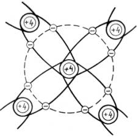
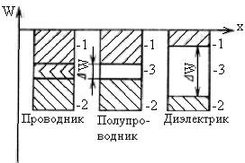
Рисунок 1.1. Рисунок 1.2.
1.2. Электропроводность полупроводников
Электропроводность полупроводников, как и других твердых тел, определяется направленным движением электронов под действием внешнего электрического поля. Существенные отличия электропроводности полупроводников от проводников и диэлектриков объясняется различием их энергетических диаграмм, показанных на рис. 1.2. Здесь 1 зона проводимости, 2 — валентная зона, 3 — запрещенная зона.
У проводников запрещенная зона отсутствует. Как видно из рисунка, зона проводимости и валет пая зона частично перекрываются. При этом образуется свободная зона, имеющая свободные энергетические уровни. Электроны заполненных валентных уровней могут легко переходить на близлежащие свободные энергетические уровни. Это определяет возможность их перемещения под действием внешнего электрического поля и хорошую электропроводность металлов.
В полупроводниках валентная зона и зона проводимости разделены неширокой запрещенной зоной (DW = 0,67эВ для Ge; 1,12 эВ для Si; 1,41 эВ для GaAs). Под действием внешнего электрического поля, теплового, светового и другого излучений возможен переход электронов из валентной зоны в зону проводимости. При этом в валентной зоне возникают свободные энергетические уровни, а в зоне проводимости появляются свободные электроны, называемые электронами проводимости. Этот процесс называют генерацией пар носителей, а не занятое электроном энергетическое состояние в валентной зоне — дыркой.
Генерация носителей заряда приводит к тому, что электроны могут перемещаться в зоне проводимости, переходя на ближайшие свободные энергетические уровни, а дырки — в валентной зоне. Это эквивалентно перемещению положительных зарядов, равных по абсолютной величине зарядам электронов. Перемещение дырок можно представить как заполнение свободных энергетических уровней в валентной зоне электронами близлежащих занятых энергетических уровней. Электропроводность, обусловленную генерацией пар носителей заряда «электрон — дырка», называют собственной электропроводностью. Возвращение возбужденных электронов из зоны проводимости в валентную зону, в результате которого, пара носителей заряда «электрон — дырка» исчезает, называют рекомбинацией. Рекомбинация сопровождается выделением кванта энергии в виде фотона.
Генерация пар носителей заряда и рекомбинация происходят одновременно. Поэтому в полупроводнике устанавливается динамическое равновесие, определяющее равновесную концентрацию электронов и дырок. Скорость генерации uген равна скорости рекомбинации uрек:
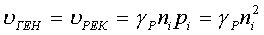
С увеличением температуры концентрация свободных электронов в полупроводнике возрастает по экспоненциальному закону:
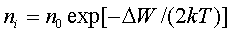
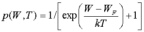
При любых значениях температуры уровень Ферми совпадает с тем энергетическим уровнем, для которого характерна вероятность занятия его электроном Р = 0,5, т. е 50%. Энергетическая диаграмма и графики распределения Ферми - Дирака для беспримесного полупроводника при различных температурах показаны на рис. 1.3.
Здесь по оси абсцисс отложена вероятность Р заполнения электронами соответствующих энергетических уровней Минимальное значение энергии зоны проводимости обозначено 1УП, максимальное значение энергии валентной зоны — IVB. При температуре абсолютного нуля ( — 273 С) все валентные уровни заполнены с вероятностью, равной Р=1, а вероятность заполнения любого уровня зоны проводимости равна нулю. Это показано на рис. 1.3 ломаной линией 1. При комнатной температуре часть валентных электронов переходит в зону проводимости, поэтому вероятность заполнения электронами валентной зоны оказывается несколько меньше единицы, а вероятность заполнения электронами зоны проводимости более нуля (кривая 2). Уровень Ферми располагается посередине запрещенной зоны, а вероятность заполнения этого уровня равна 0,5. Однако поскольку он находится в запрещенной зоне, то практически электроны не могут стабильно находиться на этом уровне.
Прямая 3 на рис. 1.3 характеризует теоретические случаи, когда температура стремится к бесконечности. В этом случае вероятность заполнения любого разрешенного уровня стремится к 0,5.
Из-за малой ширины запрещенной зоны у полупроводников даже при комнатной температуре наблюдается заметная проводимость. У диэлектриков из-за большой ширины запрещенной зоны проводимость при этом крайне мала.
Если внешнее электрическое поле отсутствует, то в полупроводнике наблюдается хаотическое тепловое движение электронов и дырок. В электрическом поле движение электронов и дырок становится упорядоченным. Проводимость полупроводника обусловлена перемещением, как свободных электронов, так и дырок. В полупроводнике различают проводимости n-типа (от слова negative — отрицательный), обусловленную движение электронов, p-типа (от слова positive — положительный), обусловленную движением дырок.
Плотность тока в полупроводнике J [А/см2] равна сумме электронной Jn и дырочной Jp составляющих:
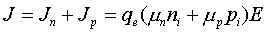
где mn — подвижность электронов, mp — подвижность дырок; qe — заряд электрона, Е — напряженность электрического поля.
Подвижность [м2/(В·с)] характеризует среднюю скорость перемещения носителей заряда под действием электрического поля напряженностью 1 В/м:
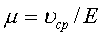
Подвижность зависит от вида полупроводника и типа носителей заряда. У носителей n-типа она выше, чем у носителей p-типа.
Как видно из приведенной выше формулы, электропроводность полупроводника зависит от подвижности носителей заряда, а также их концентрации. Введение примесей в полупроводник существенно изменяет его проводимость. Введение в четырехвалентный полупроводник пятивалентной примеси, например фосфора (F), позволяет получить донорную проводимость (n-типа). Введение трехвалентной примеси, например бора (В), позволяет получить полупроводник с акцепторной проводимостью (p-типа). Энергетические диаграммы полупроводников n- и p-типа показаны на рис. 1.4, а.
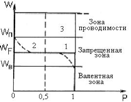
Рисунок 1.3
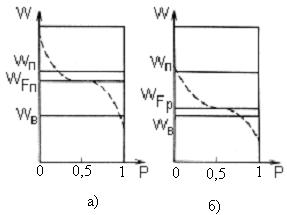
Рисунок 1.4
В отличие от собственного полупроводника у полупроводника n-типа кривая распределения Ферми — Дирака и уровень Ферми смещаются вверх. Это объясняется тем, что атомы примеси обладают энергетическими уровнями, отличающимися от уровней собственного полупроводника. Пятивалентные примеси имеют энергетические уровни валентных электронов вблизи зоны проводимости собственного полупроводника. Величина DWn = Wn — WF мала (около 0,05 эВ), поэтому даже при комнатной температуре почти все электроны с примесного уровня переходят в зону проводимости. Концентрация электронов в зоне проводимости полупроводника n-типа определяется выражением nn = Nд + nl » Nд, где Nд — концентрация доноров.
Электроны составляют подавляющее большинство носителей в полупроводнике n-типа, и поэтому называются основными носителями, а дырки — неосновными.
У полупроводника p-типа кривая распределения Ферми — Дирака и уровень Ферми смещаются вниз (см. рис. 1.4, 6). Трехвалентные примеси имеют энергетические уровни валентных электронов вблизи валентной зоны собственного полупроводника.
Величина DWp = WF — WВ также мала (около 0,05 эВ), поэтому электроны валентной зоны легко переходят на примесный уровень. При этом в валентной зоне появляется большое число дырок. Они заполняются другими электронами валентной зоны, что сопровождается образованием новых дырок. Следовательно, появляется возможность перемещения электронов в валентной зоне и повышения электропроводности, называемой дырочной. Концентрация дырок в полупроводнике p-типа определяется выражением pp = Na + pi » Na, где Na — концентрация акцепторов.
В отличие от полупроводников с донорной примесью у полупроводников p — типа основными носителями заряда являются дырки, а неосновными — электроны.
Концентрация электронов в полупроводнике с акцепторной примесью
существенно меньше, чем в собственном полупроводнике: 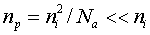
1.3. Токи в полупроводнике
В полупроводниковых приборах могут протекать дрейфовый и диффузионный токи. Дрейфовым называется ток, обусловленный электрическим полем. Если к полупроводнику приложить внешнее электрическое поле, то в нем наблюдается направленное движение дырок вдоль поля и направленное движение электронов в противоположном направлении. Суммарный дрейфовый ток электронов и дырок определяется выражением
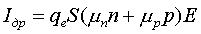
где n и p — число электронов и дырок, пересекающих площадь в 1 см2/с; S — площадь поперечного сечения полупроводника.
Диффузионный ток обусловлен перемещением носителей заряда из области с высокой концентрацией в область с более низкой концентрацией, т. е. обусловлен наличием градиента концентрации (dn/dx — градиент концентрации электронов; dp/dx — градиент концентрации дырок). Суммарный диффузионный ток электронов и дырок определяется соотношением
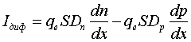
где Dn и Dp — коэффициенты диффузии электронов и дырок соответственно.
Коэффициент диффузии равен числу носителей заряда, диффундирующих за одну секунду через единичную площадку при единичном градиенте концентрации. Знак «минус» в формуле означает, что диффузия происходит в направлении уменьшения концентрации, а так как дырки имеют положительный заряд, то диффузионный ток будет положительным при dp/dx<0.
Коэффициенты диффузии зависят от типа полупроводника, концентрации примесей, температуры и состояния кристаллической решетки. Например, при комнатной температуре для германия Dn » 100 см 2/с, Dр» 47 см2/с для кремния Dn » 30 см2/с, Dp »13cм2/c.
Коэффициент диффузии связан с подвижностью носителей заряда соотношением Эйнштейна:
Общий ток в полупроводнике может содержать четыре составляющие:
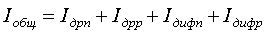
Концентрация носителей заряда в электронном объеме полупроводника может изменяться за счет генерации и рекомбинации носителей, а также при возбуждении полупроводника (например, при освещении, действии внешнего электрического или магнитного поля). При возбуждении полупроводника концентрация подвижных носителей заряда — электронов (n) и дырок (p)- превышает равновесную концентрацию (n0 и p0). Это приводит к увеличению проводимости полупроводника. Электроны или дырки проводимости, не находящиеся в термодинамическом равновесии, называются неравновесными носителями заряда.
После прекращения действия возбуждающего фактора избыточные концентрации носителей заряда (например, электронов Dn = n - n0) стремятся к нулю в результате процесса рекомбинации. При этом главную роль играют особые центры рекомбинации — ловушки, обладающие локальными энергетическими уровнями в запрещенной зоне. Они способны захватить электрон из зоны проводимости и дырку из валентной зоны, осуществляя их рекомбинацию. Такими ловушками являются дефекты кристаллической решетки внутри и на поверхности полупроводника.
Скорость уменьшения концентрации неравновесных носителей
заряда 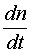
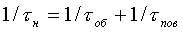
где tоб — объемное время жизни неравновесных носителей заряда; tпов — поверхностное время жизни неравновесных носителей заряда. Объемное время жизни уменьшается с ростом плотности дефектов решетки. Увеличение концентрации примесей в полупроводнике также уменьшает tоб. Максимальное значение tоб имеет собственный полупроводник.
На поверхности полупроводника имеется большое количество различных дефектов, которым соответствуют в запрещенной зоне незанятые энергетические уровни, играющие роль ловушек. Скорость поверхностной рекомбинации зависит от геометрии полупроводника, состояния поверхности и подвижности носителей заряда.
Спад начальной избыточной концентрации Dn(0) во времени подчиняется экспоненциальному закону
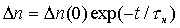
Следовательно, время жизни неравновесных носителей можно определить интервалом времени, за которое избыточная концентрация уменьшается в е раз. Результирующая скорость спада избыточной концентрации в полупроводнике
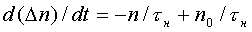
Здесь n/tн представляет собой скорость рекомбинации и зависит от мгновенного значения избыточной концентрации носителей заряда, а n0/tн — скорость генерации носителей заряда, которая зависит от равновесной концентрации носителей заряда. Величина tн является временем жизни избыточных носителей, одинаковым для электронов и дырок и близким к времени жизни неосновных носи гелей. Зная время tн, можно определить среднее расстояние, которое проходят носители заряда. Оно называется диффузионной длиной L. Так, для электронов
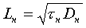
Концентрация носителей заряда зависит от координаты X и времени t. Скорость изменения концентрации носителей заряда зависит от избыточной концентрации, ее градиента и пространственной производной градиента. Эту зависимость можно найти, решая уравнение непрерывности. Для потока дырок в полупроводнике n-типа оно имеет вид:
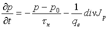
Дивергенция вектора плотности потока характеризует скорость накопления (или рассасывания) носителей заряда в элементарном объеме полупроводника, обусловленную неравенством втекающих и вытекающих потоков носителей. В одномерном случае
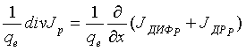
где JДИФ Р - плотность диффузионного тока дырок; JДР Р - плотность дрейфового тока дырок. Учитывая, что
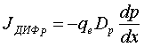 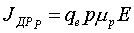
и подставляя эти выражения, получаем
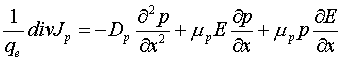
С учетом последнего выражения уравнение непрерывности принимает вид:
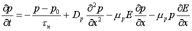
Аналогично можно получить уравнение непрерывности для потока электронов в полупроводнике p-типа. Оно имеет вид:
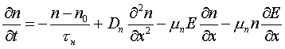
Уравнение непрерывности позволяет проводить анализ процессов в полупроводниковых приборах.
1.4. Электронно-дырочные переходы
Общие сведения. Электронно-дырочным (p-n) называют такой переход, который образован двумя областями полупроводника с разными типами проводимости: электронной и дырочной. Электронно-дырочный переход нельзя создать простым соприкосновением полупроводниковых пластин n- и p-типа, так как в месте соединения невозможно обеспечить общую кристаллическую решетку без дефектов. На практике широко используется метод получения p-n перехода путем введения в примесный полупроводник примеси с противоположным типом проводимости, например с помощью диффузии, или эпитаксии.
Электронно-дырочные переходы используются в большинстве полупроводниковых приборов (в диодах и полевых транзисторах используются по одному p-n переходу, в биполярных транзисторах - два p-n перехода, в тиристорах - три p-n перехода). Поэтому очень важным является понимание физических явлений и электрических свойств p-n перехода.
Формирование p-n-перехода. Предположим, что p-n переход образован электрическим контактом полупроводников n- и p-типа с одинаковой концентрацией донорных и акцепторных примесей (рис. 1.5, a). На границе областей возникают градиенты концентраций электронов и дырок. Вследствие того, что концентрация электронов в n-области выше, чем в p-области, возникает диффузионный ток электронов из p-области в n-область. А из-за того, что концентрация дырок в p-области выше, чем в n-области, возникает диффузионный ток дырок из p-области в n-область. В результате диффузии основных носителей заряда в граничном слое происходит рекомбинация. Приграничная p-область приобретает нескомпенсированный отрицательный заряд, обусловленный отрицательными ионами. Приграничная n-область приобретает нескомпенсированный положительный заряд, обусловленный положительными ионами.
На рис. 1.5, б показано распределение концентраций дырок p(x) и электронов n(x) в полупроводнике. В граничном слое образуется электрическое поле, направленное от n-области к p-области, как показано на рис. 1.5, а.
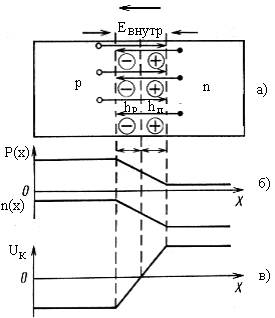
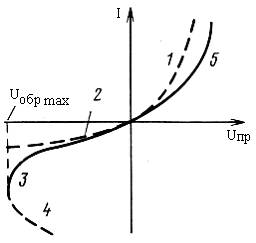
Рисунок 1.5 Рисунок 1.6
Это поле является тормозящим для основных носителей заряда. Теперь любой электрон, проходящий из n-области в p-область, попадает в электрическое поле, стремящееся возвратить его обратно в электронную область. Аналогично любая дырка, проходящая из p-области в n-область, также попадает в электрическое поле, стремящееся возвратить ее обратно в дырочную область.
Внутреннее поле является ускоряющим для неосновных носителей. Если электроны p-области вследствие, например, хаотического теплового движения попадут в зону p-n перехода, то внутреннее поле обеспечит их быстрый переход через приграничную область. Аналогично будут преодолевать p-n переход дырки n-области. Для них внутреннее поле также является ускоряющим.
Таким образом, внутреннее электрическое поле p-n перехода создает дрейфовый ток неосновных носителей заряда. Этот ток направлен встречно диффузионному току основных носителей заряда.
Если к полупроводнику не прикладывается внешнее напряжение, то результирующий ток через p-n переход отсутствует:
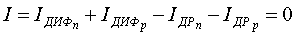
Это равенство устанавливается при определенной контактной разности потенциалов UK (рис. 1. 5, в). Эта разность потенциалов препятствует перемещению основных носителей заряда, т. е. создает потенциальный барьер. Для того чтобы преодолеть потенциальный барьер электрон должен обладать энергией W = qeUK. С увеличением потенциального барьера диффузионный ток должен убывать. Толщина слоя h, в котором действует внутреннее электрическое поле, мала и определяет толщину p-n перехода (обычно h < 10-6 м). Однако сопротивление этого слоя велико, поскольку он обеднен основными носителями заряда. Поэтому его часто называют запирающим. При одинаковых концентрациях носителей зарядов в p- и n-областях полупроводника толщина p-n перехода образуется из двух равных частей hp и hn (см. рис. 1.5, а).
В общем случае справедливо соотношение
Nаhp = Nдhn. (1.6)
Контактная разность потенциалов и толщина р-n-перехода зависят от концентрации доноров и акцепторов:
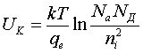
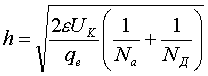
где с - диэлектрическая проницаемость.
Очевидно, что увеличение концентрации доноров и акцепторов приводит к увеличению контактной разности потенциалов и уменьшению толщины p-n перехода.
Вольт-амперная характеристика p-n-перехода. Вольт-амперной характеристикой p-n перехода называется зависимость тока, протекающего через p-n переход, от величины и полярности приложенного напряжения. Аналитическое выражение ВАХ p-n перехода имеет вид:
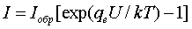
где Iобр — обратный ток насыщения p-n перехода; U - напряжение, приложенное к p-n переходу.
Характеристика, построенная с использованием этого выражения, имеет два характерных участка (рис. 1.6): 1— соответствующий прямому управляющему напряжению Unp, 2 — соответствующий обратному напряжению Uобр.
При больших обратных напряжениях наблюдается пробой p-n перехода, при котором обратный ток резко увеличивается. Различают два вида пробоя: электрический (обратимый) и тепловой (необратимый).
Прямое включение p-n-перехода. Включение, при котором к p-n переходу прикладывается внешнее напряжение Uпр в противофазе с контактной разностью потенциалов, называется прямым. Прямое включение p-n перехода показано на рис. 1.7, а. Практически все внешнее напряжение прикладывается к запирающему слою, поскольку его сопротивление значительно больше сопротивления остальной части полупроводника. Как видно из потенциальной диаграммы (рис. 1.7, б), высота потенциального барьера уменьшается: Uб = Uк - Uпp. Ширина p-n перехода также уменьшается (h' < h). Дрейфовый ток уменьшается, диффузионный ток резко возрастает. Динамическое равновесие нарушается и через p-n переход протекает прямой ток:
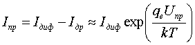
Как видно из формулы (16.10), при увеличении прямого напряжения ток может возрасти до больших значений, так как он обусловлен движением основных носителей, концентрация которых в обеих областях полупроводника велика.
При прямом включении дрейфовая составляющая тока пренебрежимо мала по сравнению с диффузионной. Это объясняется низкой концентрацией неосновных носителей заряда и уменьшением результирующей напряженности электрического поля, обусловливающих дрейфовый ток.
Процесс введения основных носителей заряда через p-n переход с пониженной высотой потенциального барьера в область полупроводника, где эти носители заряда являются неосновными, называется инжекцией. Инжектированные носители диффундируют вглубь полупроводника, рекомбинируя с основными носителями этой области. Дырки, проникшие из p-области в n-область, рекомбинируют с электронами, поэтому диффузионный дырочный ток Iр постепенно спадает в n-области до нуля.
Поступающие от внешнего источника в n-область электроны продвигаются к p-n переходу, создавая электронный ток In. По мере приближения к переходу, вследствие рекомбинации электронов с дырками, этот ток спадает до нуля. Суммарный же ток в n-области Iдиф = Ip + In во всех точках полупроводника n-типа остается неизменным. Одновременно с инжекцией дырок в n-область происходит инжекция электронов в p-область. Протекающие при этом процессы аналогичны описанным выше.
Обратное включение p-n-перехода. Включение, при котором к p-n переходу прикладывается внешнее напряжение Uобр в фазе с контактной разностью потенциалов, называется обратным. Этот случай иллюстрирует рис. 1.8, а.
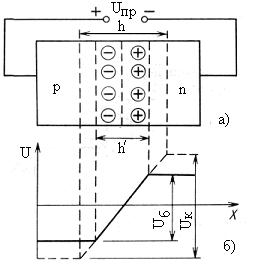
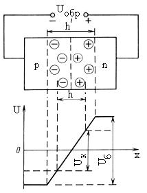
Рисунок 1.7. Рисунок 1.8.
Под действием электрического поля, создаваемого внешним источником Uобр, основные носители оттягиваются от приконтактных слоев вглубь полупроводника. Как видно из рис. 1.8, б, это приводит к расширению p-n перехода (h' > h). Потенциальный барьер возрастает и становится равным Uб = Uк + Uобр. Число основных носителей, способных преодолеть действие результирующего поля, уменьшается. Это приводит к уменьшению диффузионного тока, который может быть определен по формуле
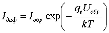
Для неосновных носителей (дырок в n-области и электронов в p-области) потенциальный барьер в электронно-дырочном переходе отсутствует. Неосновные носители втягиваются полем в переход и быстро преодолевают его. Это явление называется экстракцией.
При обратном включении преобладающую роль играет дрейфовый ток. Он имеет небольшую величину, так как создается движением неосновных носителей. Этот ток называется обратным и может быть определен по формуле Iобр = Iдр — Iдиф. Величина обратного тока практически не зависит от напряжения Uобр. Это объясняется тем, что в единицу времени количество генерируемых пар «электрон — дырка» при неизменной температуре остается неизменным. Поскольку концентрация неосновных носителей значительно меньше концентрации основных носителей заряда, обратный ток p-n перехода существенно меньше прямого (обычно на несколько порядков). Это определяет выпрямительные свойства p-n перехода: способность пропускать ток только в одном направлении.
Для получения хороших выпрямительных свойств желательно уменьшить обратный ток, что достигается очисткой исходного полупроводникового материала с целью снижения концентрации неосновных носителей заряда. Высокая степень чистоты полупроводниковых материалов обеспечивается специальной дорогостоящей технологией.
Электрический пробой происходит в результате внутренней электростатической эмиссии и под действием ударной ионизации атомов. Внутренняя электростатическая эмиссия в полупроводниках аналогична электростатической эмиссии электронов из металла. Под действием сильного электрического поля часть электронов освобождается из ковалентных связей и получает энергию, достаточную для преодоления высокого потенциального барьера p-n перехода. Двигаясь с большой скоростью, электроны сталкиваются с нейтральными атомами и ионизируют их. В результате ударной ионизации появляются новые свободные электроны и дырки. Они, в свою очередь, разгоняются полем и создают дополнительные носители тока. Описанный процесс носит лавинообразный характер и приводит к значительному увеличению обратного тока через p-n переход. Электрическому пробою соответствует участок 3 на рис. 1.6. Если чрезмерно увеличивать обратное напряжение (до значений, превышающих максимально допустимое напряжение Uo6p max, указанное на рис. 1.6), то произойдет тепловой пробой p-n перехода, и он потеряет свойство односторонней проводимости. Обратная ветвь характеристики при тепловом пробое имеет вид участка 4.
Тепловой пробой p-n перехода происходит вследствие вырывания валентных электронов из связей в атомах при тепловых колебаниях кристаллической решетки. Тепловая генерация пар «электрон — дырка» приводит к увеличению концентрации неосновных носителей заряда и росту обратного тока. Увеличение тока сопровождается дальнейшим повышением температуры. Процесс нарастает лавинообразно, происходит изменение структуры кристалла, и переход необратимо выходит из строя. Если же при возникновении пробоя ток через p-n переход ограничен сопротивлением внешней цепи и мощность, выделяемая на переходе, невелика, то пробой обратим.
Анализ ВАХ p-n перехода позволяет рассматривать его как нелинейный элемент, сопротивление которого Rд изменяется в зависимости от величины и полярности приложенного напряжения. Нелинейные свойства p-n перехода лежат в основе работы полупроводниковых диодов, транзисторов и других приборов.
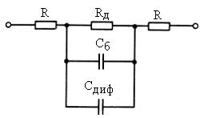
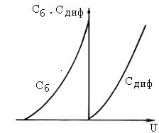
Рисунок 1.9 Рисунок 1.10
На рис. 1.9 приведена модель реального p-n перехода. Здесь помимо управляемого сопротивления Rд показаны неуправляемые сопротивления контактов R и емкости p-n перехода: барьерная Сб и диффузионная Сдиф. Наличие у реальных p-n переходов сопротивлений контактов R сказывается на виде ВАХ в области прямых управляющих напряжений: характеристика располагается ниже по сравнению с идеализированным p-n переходом (область 5 на рис. 1.6).
Потенциальный барьер образован неподвижными зарядами: положительными и отрицательными ионами. Емкость, обусловленная этими зарядами, называется барьерной. При изменении запирающего напряжения меняется толщина p-n перехода, а следовательно, и его емкость. Величина барьерной емкости пропорциональна площади p-n перехода, концентрации носителей заряда и диэлектрической проницаемости материала полупроводника. При малом обратном напряжении толщина p-n перехода мала, носители зарядов противоположных знаков находятся на небольшом расстоянии друг от друга. При этом собственная емкость p-n перехода велика. В случае увеличения обратного напряжения толщина p-n перехода растет и емкость p-n перехода уменьшается. Таким образом, p-n переход можно использовать как емкость, управляемую обратным напряжением: Сб = qб/Uобр, где qб — объемный заряд равновесных носителей.
При прямом напряжении p-n переход, кроме барьерной емкости, обладает диффузионной емкостью Сдиф. Эта емкость обусловлена накоплением подвижных носителей заряда в n- и p-областях. При прямом напряжении основные носители заряда в большом количестве диффундируют через пониженный потенциальный барьер и, не успев рекомбинировать, накапливаются в n- и p-областях.
Каждому значению прямого напряжения соответствует определенный накопленный неравновесный заряд qдиф:
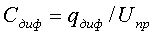
Диффузионная емкость не оказывает существенного влияния на работу p-n перехода, так как она всегда зашунгирована малым прямым сопротивлением Rд. Зависимости емкостей p-n перехода от управляющего напряжения имеют вид, изображенный на рис. 1.10.
1.5. Полупроводниковые диоды
Полупроводниковым диодом называется прибор с двумя выводами (двухполюсный элемент), содержащий один p-n переход. На практике широко используются германиевые, кремниевые и арсенид-галлиевые полупроводниковые диоды. Данные об основных типах, обозначениях и основные характеристики полупроводниковых диодов приведены в табл. 1.1.
Полупроводниковые диоды имеют ряд преимуществ по сравнению с электронными лампами: небольшие габаритные размеры, малую массу, высокий коэффициент полезного действия, отсутствие накаливаемого источника электронов, большой срок службы, высокую надежность. В основу системы обозначений полупроводниковых диодов положен буквенно-цифровой код.
Таблица 1.1
| Наименование |
Буквенный код |
Обозначение |
Основная характеристика |
|
Стабилитрон
односторонний
|
VD КВ VD КЛ АЛ VD АОД |
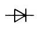
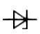 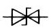
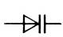
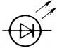
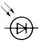
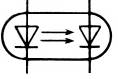 |
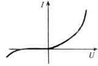
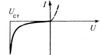
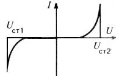
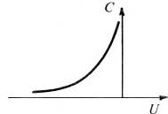
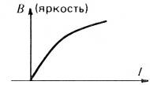
|
Важное свойство полупроводниковых диодов — односторонняя проводимость — широко применяется в устройствах выпрямления, ограничения и преобразования электрических сигналов. Изменение барьерной емкости p-n перехода под действием обратного напряжения используется в приборах, получивших название варикапы. Явление обратимого электрического пробоя p-n перехода используется в приборах для стабилизации напряжения. Эти приборы называются стабилитронами.
1.6. Биполярные транзисторы
Биполярным транзистором (БТ) называется электропреобразовательный полупроводниковый прибор, имеющий два взаимодействующих перехода. Название прибора введено в 1948 г., оно происходит от английских слов transfer (преобразователь) и resistor (сопротивление). Транзистор представляет собой кристалл полупроводника, содержащий три области с поочередно меняющимися типами проводимости. В зависимости от порядка чередования областей различают БТ типов p-n-p и n-p-n. Принцип действия БТ различных типов одинаков. Транзисторы получили название биполярных, так как их работа обеспечивается носителями зарядов двух типов: основными и неосновными.
Схематическое устройство и условное графическое обозначение p-n-p транзисторов показано на рис. 1.11, а и n-p-n транзисторов — на рис. 1.11, б. Одну из крайних областей транзисторной структуры создают с повышенной концентрацией примесей, используют в режиме инжекции и называют эмиттером. Среднюю область называют базой, а другую крайнюю область — коллектором. Два перехода БТ называются эмиттерным и коллекторным.
В зависимости от того, какой электрод имеет общую точку соединения со входной и выходной цепями, различают три способа включения транзистора: с общей базой; общим эмиттером и общим коллектором. Электрические параметры и характеристики БТ существенно различаются при разных схемах включения. На практике БТ широко используются в качестве усилительных приборов. В этом случае к эмиттерному переходу для обеспечения режима инжекции подается прямое напряжение, а к коллекторному переходу, работающему в режиме экстракции, — обратное напряжение. Такой режим работы БТ называется активным.
Кроме рассмотренного выше, БТ может работать в следующих режимах: отсечки, когда оба перехода находятся под действием обратных напряжений; насыщения, когда оба перехода находятся под действием прямых напряжений; инверсном режиме, когда к эмиттерному переходу приложено запирающее напряжение, а к коллекторному переходу —отпирающее. Последний режим часто встречается при работе БТ в качестве ключа разнополярных-электрических сигналов.
Технологические типы БТ. Исторически первыми широко распространившимися БТ явились сплавные транзисторы. Упрощенный вид структуры сплавного p-n-p транзистора показан на рис. 16.12, а.
Рисунок
1.11
Рисунок
1.12.
Здесь в полупроводниковую пластину с проводимостью n-типа с двух сторон вплавляли полупроводниковый материал с проводимостью p-типа. Процесс вплавления продолжался до тех пор, пока расстояние между образующимися p-областями не становилось достаточно малым (50...60 мкм). Затем полупроводниковую пластину укрепляли на металлическом кристаллодержателе и помещали в герметический металлический корпус. Выводы эмиттера и коллектора пропускали сквозь стеклянные изоляторы, закрепленные в корпусе, вывод базы соединяли непосредственно с корпусом. Транзисторы имели малую максимально допустимую постоянную рассеиваемую мощность коллектора (Рк max £ 250 мВт), так как отвод тепла происходит вдоль тонкой полупроводниковой пластины базы, имеющей малую теплопроводность. Максимальная рабочая частота сплавных транзисторов не превышала 30 МГц.
Современные БТ изготавливаются по планарной технологии с использованием методов диффузии и эпитаксии. Упрощенный вид планарного БТ со структурой n-p-n, изготовленный методом трех диффузий, показан на рис 1.12, б. Здесь в полупроводниковую пластину с проводимостью p-типа при первой диффузии вводят донорную примесь на заданную глубину (например, порядка 20 мкм). Таким образом, создают коллекторную область БТ. При второй диффузии в полупроводниковую пластину вводят акцепторную примесь на меньшую глубину (15 мкм) и создают базовую область БТ. При последней, третьей диффузии вводят примеси с высокой концентрацией доноров, создавая эмиттерную область (n+-типа). Выводы БТ располагаются в одной плоскости, поэтому транзистор называется планарным. Это упрощает процесс изготовления и позволяет автоматизировать монтаж транзистора в корпус, а также снизить его стоимость.
Локальное введение примесей в полупроводниковую пластину обеспечивается использованием специальных шаблонов и методов литографии.
Рисунок 1.13 Рисунок 1.14
Использование метода диффузии обеспечивает неравномерное распределение примесей в полупроводниковой пластине, что видно из рис. 1.13, а. Здесь 1 — соответствует коллекторной диффузии, 2 — базовой диффузии, 3 — эмиттерной диффузии.
Результирующая характеристика распределения примесей в полупроводнике показана на рис 1.13, б. Существенной особенностью рассматриваемой структуры является неравномерное распределение примесей в области базы и возможность создания тонкой (порядка единиц микрометров) базовой области. Благодаря этому в базе создается ускоряющее поле и время движения неосновных носителей зарядов через базу к коллектору уменьшается, что позволяет создавать транзисторы, работающие на частотах до 1 ГГц и более. Транзисторы, имеющие ускоряющее поле в базовой области, получили название дрейфовых.
Наряду с методом диффузии, на практике при изготовлении БТ широко используется метод создания полупроводниковых слоев путем эпитаксии. Суть этого метода заключается в последовательном выращивании на поверхности полупроводниковой и диэлектрической пластины слоев с заданным типом проводимости. При эпитаксии получают слои с равномерным распределением примеси
Статические характеристики БТ. Статические характеристики отражают зависимость между постоянными токами и напряжениями на входе и выходе БТ. Полное представление о свойствах БТ можно получить, воспользовавшись двумя семействами характеристик: входных и выходных. Для схемы с общей базой входные ( и выходные ) характеристики показаны на рис. 1.14, а, б. Как видно из рис. 1.14, а, входные характеристики имеют вид вольтамперной характеристики диода при прямом включении. С увеличением отрицательного напряжения UКБ наблюдается слабо выраженное смещение входных характеристик влево. Это объясняется тем, что электрическое поле, создаваемое напряжением UКБ почти полностью сосредоточено в коллекторном переходе и оказывает незначительное влияние на прохождение зарядов через эмиттерный переход.
Выходные характеристики БТ в схеме с общей базой (рис. 1.14, б) представляют собой пологие, почти прямые линии. Это характеризует высокое выходное сопротивление выходной цепи переменному току (RКБд = DUКБ/DIЭ). При таком включении даже при DIКБ = 0 происходит явление экстрации и ток коллектора может иметь большое значение, зависящее от тока эмиттера IЭ.
При IЭ = 0 характеристика начинается в начале координат и имеет вид обратной ветви p-n перехода. Выходной ток IКБ0 в этом случае является неуправляемым током коллектора. При IЭ ¹ 0 выходной ток близок к входному. Однако, если меняется полярность напряжения UКБ, то он резко уменьшается и достигает нуля при значениях UКБ порядка десятых долей вольта. В последнем случае коллекторный переход работает в прямом направлении. Ток через этот переход резко возрастает и идет в направлении, обратном нормальному рабочему току, что может вывести транзистор из строя. Поэтому на данном участке характеристики показаны штриховыми линиями, они не являются рабочими и обычно на графиках не приводятся.
На рис. 1.15, а, б, показаны соответственно семейства входных и выходных характеристик для схемы с общим эмиттером. Статическая входная характеристика показывает зависимость .С ростом отрицательного напряжения UK3 наблюдается сдвиг входных характеристик вправо. При увеличении UK3 растет обратное напряжение, приложенное к коллекторному переходу и почти все подвижные носители заряда быстро втягиваются в коллектор, не успев рекомбинировать в базе. Поэтому ток базы уменьшается при увеличении напряжения UКЭ, что видно из рис. 1.15, а.
Значения входных токов в схеме с общим эмиттером гораздо меньше, чем в схеме с общей базой. Следовательно, входное сопротивление в схеме с общим эмиттером существенно больше, чем в схеме с общей базой.
Принцип работы БТ. Работу БТ рассмотрим на примере структуры n-р-n, включенной в схеме с общей базой (рис. 1.16).
К коллекторному переходу приложено обратное напряжение. Пока ток IЭ = 0, в транзисторе протекает ток неосновных носителей заряда через коллекторный переход. Этот ток называют начальным коллекторным. При подключении к эмиттерному переходу прямого напряжения UБЭ в транзисторе возникает эмиттерный ток, равный сумме дырочной и электронной составляющих: IЭ = IЭp + IЭn.
Если бы концентрация электронов и дырок в эмиттере и базе была одинаковой, то указанные выше составляющие эмиттерного тока были равны. Но в транзисторе создают эмиттерную n+-область с существенно большей концентрацией электронов по сравнению с концентрацией дырок в базовой области. Это приводит к тому, что число электронов, инжектированных из эмиттера в базу, во много раз превышает число дырок, движущихся в противоположном направлении. Следовательно, почти весь ток эмиттерного перехода обусловлен электронами.
Рисунок 1.15
Рисунок 1.16
Эффективность эмиттера оценивается коэффициентом инжекции gи. Для БТ со структурой n-p-n он равен отношению электронной составляющей эмиттерного тока к общему току эмиттера: gи = IЭn/IЭ. У современных транзисторов gи » 0,999.
Инжектированные через эмиттерный переход электроны проникают вглубь базы, для которой они являются неосновными носителями. В базе происходит частичная рекомбинация электронов с дырками. Однако если база тонкая, то преобладающая часть электронов достигает коллекторного перехода, не успев рекомбинировать. При этом электроны попадают в ускоряющее поле коллекторного перехода. В результате экстрации электроны быстро втягиваются из базы в коллектор и участвуют в создании тока коллектора.
Малая часть электронов, которая рекомбинирует в области базы с дырками, создает небольшой ток базы IБ. Ток базы равен разности токов эмиттера и коллектора: IБ = IЭ - IК. Таким образом, в рассматриваемом режиме (называемом активным) через БТ протекает сквозной ток от эмиттера через базу к коллектору. Незначительная часть эмиттерного тока ответвляется в цепь базы.
Для оценки влияния рекомбинации носителей заряда в базе на свойства БТ в активном режиме используют коэффициент переноса носителей в базе nп. Этот коэффициент показывает, какая часть инжектированных эмиттеров электронов достигает коллекторного перехода: nп = IKn/IЭn. Коэффициент переноса nп тем ближе к единице, чем тоньше база и меньше концентрация дырок в базе по сравнению с концентрацией электронов в эмиттере.
Важнейшим параметром БТ является коэффициент передачи тока эмиттера: aб.т. = gиnп. Так как gи и nп меньше единицы, то коэффициент передачи тока эмиттера также не превышает единицы. Обычно aб.т. = 0,95...0,999. В практических случаях коэффициент aб.т. находят как отношение приращения тока коллектора к приращению тока эмиттера при неизменном напряжении на коллекторном переходе:
. (1.12)
Поскольку в цепи коллектора, кроме тока, обусловленного экстракцией электронов из базы в коллектор, протекает обратный ток коллекторного перехода IКБ0, то полный ток коллектора
. (1.13)
Однако учитывая, что ток IКБ0 незначителен, можно считать Iк » aБТIЭ. Из последнего выражения видно, что БТ является прибором, управляемым током: значение коллекторного тока зависит от входного эмиттерного тока. Если рассматривать БТ как прибор с зависимыми источниками, то он близок по свойствам к источнику тока, управляемому током (ИТУТ). В свою очередь, входным током Iэ управляет прямое напряжение UБэ. Как видно из потенциальной диаграммы, показанной на рис. 1.16, б, с ростом прямого напряжения уменьшается потенциальный барьер эмиттерного перехода. Это сопровождается экспоненциальным ростом тока эмиттера Iэ. К коллекторному переходу в активном режиме прикладывается большое запирающее напряжение. Как видно из потенциальной диаграммы, это приводит к значительному увеличению потенциального барьера коллекторного перехода. Вследствие того, что напряжение в цепи коллектора значительно превышает напряжение в цепи эмиттера, а токи в цепях эмиттера и коллектора примерно равны, мощность полезного сигнала на выходе схемы оказывается существенно большей, чем на входе. Это и открывает широкие возможности использования БТ в качестве усилительных приборов.
Наилучшим образом усилительные свойства БТ проявляются при включении в схеме с общим эмиттером, показанной на рис. 1.17.
Основной особенностью схемы с общим эмиттером является то, что входным током в ней является ток базы, существенно меньший тока эмиттера. Выходным током, как и в схеме с общей базой, является ток коллектора. Следовательно, коэффициент передачи тока в схеме с общим эмиттером равен отношению приращений тока коллектора и приращению тока базы. Этот коэффициент принято обозначать bБТ.. Нетрудно найти и соотношение между коэффициентами aБТ и bБТ:
. (1.14)
Если, например, aБТ = 0,99, то bБТ = 0,99/(1 - 0,99) = 99.
Таким образом, в схеме с общим эмиттером нетрудно достигнуть больших значений коэффициента усиления по току. А так как при таком включении можно получить усиление и по напряжению, то достигаемый коэффициент усиления по мощности Кp =КiКu значительно превосходит значения, достигаемые при других способах включения (с общей базой и с общим коллектором). Это и объясняет широкое применение БТ, включенных по схеме с общим эмиттером.
Входное сопротивление БТ в схеме с общим эмиттером значительно больше, чем в схеме с общей базой. Это следует из очевидного неравенства DUВХ/DIБ >> DUВХ/DIЭ.
Представляет интерес определение зависимости выходного тока от входного для схемы с общим эмиттером. Используя приведенное выше выражение для полного тока коллектора, заменим в нем значение тока IЭ на его составляющие Iк + Iб и выполним элементарные преобразования:
, (1.15)
где IКБ/(1-aБТ) = IКЭ0 - начальный коллекторный ток в схеме с общим эмиттером при IБ = 0.
В схеме с общим коллектором входной сигнал подается на участок «база — коллектор». Входным током является ток базы, а выходным - ток эмиттера. Поэтому коэффициент передачи тока для этой схемы
.
При таком включении БТ обеспечивает большие значения коэффициента передачи тока и имеет высокое входное сопротивление, однако коэффициент передачи напряжения не превышает
единицу.
Дифференциальные параметры БТ. Биполярный транзистор удобно представить активным нелинейным четырехполюсником, изображенным на рис. 1. 18, а, у которого выходной ток I2 и входное напряжение U1 зависят от входного тока I1 и выходного напряжения U2. В этом случае четырехполюсник описывается системой уравнений в H-параметрах.
Рисунок 1.17 Рисунок 1.18
Переходя к мгновенным значениям напряжений и токов, уравнения можно представить в виде:
При малых изменениях токов и напряжений приращения входного и выходного напряжений и токов можно найти из следующих уравнений:
(1.16)
Следует учитывать, что Н-параметры, указанные в формулах 1.16-1.18 имеют комплексный характер.
Частные производные в уравнениях (1.16) являются дифференциальными H-параметрами транзистора:
(1.17)
Если значения переменных напряжений и токов транзистора существенно меньше значений постоянных напряжений и токов транзистора, то приведенные выше уравнения можно записать в виде:
(1.18)
Здесь Iвх = I1 и Uвых = U2 — постоянные составляющие соответственно входного тока и выходного напряжения.
Каждый из параметров, приведенных в уравнениях, имеет определенный физический смысл:
— входное сопротивление транзистора при коротком замыкании на выходе (uвых = 0);
— коэффициент обратной связи, характеризующий влияние выходного напряжения на режиме разомкнутой входной цепи транзистора (uвх = 0);
— коэффициент усиления по току при uвых = 0;
— выходная проводимость транзистора при разомкнутой входной цепи (iвх = 0).
Указанные параметры можно определить по статическим характеристикам БТ, используя вместо частных производных соответствующие им малые приращения токов и напряжений. Значения H-параметров зависят от схемы включения БТ. В справочниках обычно приводят значения H-параметров для БТ, включенных по схеме с общим эмиттером. Для них приняты обозначения H11 э, H12 э, H21 э, H22 э.
Используя H-параметры, нетрудно представить формальную эквивалентную схему БТ в виде рис. 1.18, б, справедливую для любой схемы включения транзистора. Очевидно, что это одна из моделей приборов с зависимыми источниками.
Система H-параметров называется гибридной, так как одни H-параметры определяются в режиме холостого хода на выходе (iвх = 0), а другие в режиме короткого замыкания на выходе (uвых = 0). При этом параметры имеют разную размерность. Рассмотренные параметры широко используются при расчетах низкочастотных транзисторных схем.
1.7. Полевые транзисторы
Принцип действия полевых транзисторов (ПТ). В соответствии с определением в ПТ управление выходным током происходит под действием электрического поля. Рассмотрим, как это можно
осуществить. Допустим, что имеется полупроводниковый материал в форме параллелепипеда (стержень, брусок) длиной , толщиной h и шириной b (рис. 1.19). В этот материал внедрены, например, акцепторные примеси. В свое время такую конструкцию рассматривал Шокли и предполагал, что примеси внедрены равномерно по всему объему.
Рисунок 1.19
Подключим к концам стержня электроды и назовем их исток и сток. Область полупроводника между истоком и стоком, по которой протекает ток, назовем каналом. Сопротивление полупроводникового стержня рассчитывается по формуле
. (1.19)
Здесь rПТ = l/(qepm), где qe — заряд электрона, К; m — дрейфовая подвижность носителей заряда, см2/(В·с); р— концентрация примесей, атом/см3.
Очевидно, ток будет зависеть от геометрических размеров стержня, концентрации примесей, подвижности носителей. В реальных приборах используют зависимость либо толщины канала, либо концентрации примесей в канале от электрического поля. С целью управления выходным током в приборе введен дополнительный электрод — затвор.
Управление током возможно с помощью: p-n перехода; конденсатора, образованного структурой «металл — диэлектрик — полупроводник»; перехода «металл — полупроводник», названного барьером Шотки. У полевых транзисторов с p-n переходом и барьером Шотки изменение выходного тока происходит из-за изменения эффективной толщины канала (содержащей подвижные носители заряда), а у МДП-транзисторов — за счет изменения концентрации носителей заряда
Упрощенные конструкции ПТ разных структур показаны на рис. 1.20.
Для реализации ПТ с управляющим p-n переходом у полупроводникового стержня p-типа сверху и снизу создают слои с высокой концентрацией донорной примеси Nд, соединенные между собой и подключенные к внешнему выводу — затвору. Эти слои принято обозначать n+. Структура n+-рпредставляет собой электронно-дырочный переход. Известно, что у электронно-дырочного перехода Nдhn = Nahp. Следовательно, так как Nд>>Nа, то hn<<hp. Таким образом, рассматриваемый электронно-дырочный переход в основном расположен в p-области, а области с толщиной hp, показанные на рис. 16.20, и, обеднены подвижными носителями заряда. Эффективная толщина канала, по которому протекает ток, hi = h — 2hp. Очевидно, ее можно менять, изменяя hp за счет внешнего управляющего напряжения. Если к электронно-дырочному переходу прикладывать запирающее напряжение, hp увеличивается, а эффектная толщина проводящего канала и, следовательно, выходной ток уменьшаются. При определенном запирающем напряжении (называемым напряжением запирания) области, обедненные подвижными носителями зарядов, смыкаются и выходной ток теоретически должен быть равен нулю. У реальных приборов в этом случае протекает незначительный ток, как и в обычных диодах при обратном включении.
Рисунок 1.20
Для удобства использования на практике в справочниках для маломощных ПТ с p-n переходом вместо напряжения запирания указывают напряжение отсечки U3И отс, определяемой при токе стока Ic=10-5 А. Если к электронно-дырочному переходу «затвор — канал» прикладывать отпирающее напряжение, то hp уменьшается, а эффективная толщина проводящего канала увеличивается и стремится к максимально возможному значению h. Выходной ток в данном случае возрастает. Однако при определенных значениях отпирающего напряжения (превышающих 0,6 В для кремниевых приборов) возникают существенные прямые токи перехода «затвор — канал» и входное сопротивление прибора резко падает. В большинстве случаев применения ПТ это явление нежелательно. Поэтому обычно транзисторы с p-n переходом используют при запирающих входных напряжениях.
На рис. 1.20, б показана конструкция МДП транзистора. Здесь в исходном полупроводниковом материале p-типа, называемом подложкой, создается слой n-типа. Это слой выполняет функцию встроенного канала. Для обеспечения механизма управления током канала в транзисторе предусмотрены тонкий слой высококачественного диэлектрика (Д) и металлический слой (М), выполняющий функцию затвора (3). Если к затвору приложить положительный заряд, то по закону электростатической индукции в канале будет индуцироваться отрицательный заряд. За счет увеличения концентрации электронов, обусловленной их дополнительным поступлением из подложки и внешних областей транзистора (не перекрытых затвором), наблюдается возрастание тока канала. И наоборот, если к затвору приложить отрицательный заряд, то концентрация электронов в канале уменьшится и, следовательно, уменьшится ток канала.
Очевидно, МДП структура получится, если непосредственно на подложку последовательно нанести диэлектрический и металлический слои. Такой случай реализуется, если в структуре, показанной на рис. 1.20, б, отказаться от создания области с проводимостью n-типа, расположив там часть подложки p-типа. Теперь, если к затвору приложить достаточно большой положительный заряд, то по закону электростатической индукции в канале индуцируется соответствующий отрицательный заряд, увеличивается концентрация подвижных носителей n-типа и возникает проводящий канал. Такой транзистор получил название МДП ПТ с индуцированным каналом n-типа. Области n+ используются для создания низкоомных омических (невыпрямляющих) контактов стока и истока. Они же препятствуют протеканию существенного тока между выходными электродами ПТ при нулевом или отрицательном заряде на затворе. Это объясняется тем, что n+ -области и часть p-подложки образуют два последовательно встречно включенных между истоком и стоком электронно-дырочных перехода.
В зависимости от типа подложки, типа канала и числа затворов различают несколько разновидностей МДП ПТ. Следует отметить, что наличие диэлектрика между затвором и каналом обусловливает чрезвычайно высокое входное сопротивление МДП-транзисторов постоянному току любой полярности (Rвх = 1010...1014 Ом). Однако наличие емкости «затвор — канал», обеспечивающей управление выходным током прибора, приводит к заметному снижению входного сопротивления МДП ПТ на высоких частотах.
Полевые транзисторы с p-n переходом при одинаковых геометрических размерах с МДП-транзисторами могут иметь в рабочем режиме меньшие входные емкости. Это объясняется тем, что в рабочем режиме к электронно-дырочному переходу «затвор — канал» прикладывается запирающее напряжение и, следовательно, барьерная емкость перехода (аналогично варикапу) уменьшается.
Сочетание достоинств полевых транзисторов с p-n переходом и МДП ПТ реализуется в транзисторах с барьером Шотки, упрощенная конструкция которых приведена на рис. 1.20, в. Здесь в качестве управляющей цепи используется контакт «металл — полупроводник», обладающий выпрямительными свойствами и очень малой емкостью. Механизм управления аналогичен приборам с управляющим p-n переходом. В качестве исходного материала применяется обычно арсенид галлия n-типа. Это обеспечивает хорошие температурные, усилительные и частотные свойства приборов.
Графические обозначения ПТ разных типов и структур приведены в табл. 1.2.
Таблица 1.2
| Наименование |
Обозначения |
Транзистор с р--переходом и каналом р-типа Транзистор с р--переходом и каналом n-типа. Транзистор со структурой МДП и со встроенным каналом р-типа. Транзистор со структурой МДП И с индуцированным каналом р-типа. Транзистор со структурой МДП И со встроенным каналом n-типа. Транзистор со структурой МДП и с индуцированным каналом n-типа. МДП тетрод со встроенным каналом n-типа. Транзистор со структурой МНОП Транзистор с барьером Шоттки и каналом n-типа. |
|
Статические характеристики ПТ. В качестве статических характеристик ПТ представляются функциональные зависимости между токами и напряжениями, прикладываемыми к их электродам: входная характеристика I3 = f(Uзи) при Uси = const; характеристика обратной передачи I3=f(Uси) при Uзи = const; характеристика прямой передачи Iс=f(Uзи) при Uси = const; выходная характеристика Iс = f(Uси) при Uзи = const.
На практике широко используются лишь две поcледние характеристики, причем первую из них часто называют характеристикой передачи.
Входная характеристика и характеристика обратной передачи используются редко, так как в абсолютном большинстве случаев применения входные токи ПТ (10-8...10-12 А) пренебрежительно малы по сравнению с токами, протекающими через элементы, подключенные к их входам.
Ориентировочный вид характеристик передачи ПТ разных типов и структур показан в табл. 1.2.
Основные параметры, интересующие разработчиков электронной аппаратуры, могут быть получены из семейства выходных (стоковых) характеристик. Поэтому они заслуживают подробного рассмотрения.
Стоковые характеристики ПТ разных структур и типов приведены на рис. 1.21. Условно их можно разбить на четыре области: крутую, пологую, пробоя и возникновения прямых токов затвора. В крутой области наблюдается резко выраженная зависимость тока стока Iс от напряжений сток — исток Uси и затвор — исток Uзи. Здесь транзистор ведет себя как сопротивление, управляемое напряжением Uзи. Пологая область отделена от крутой геометрическим местом точек (кривая ОА на рис. 1.21), для которых выполняется условие: Uси = Uзи — UЗИ oтс. Для пологой области характерна слабовыраженная зависимость Iс = f(Uси).
При больших напряжениях на стоке наблюдается резкое увеличение Iс, и если мощность рассеивания на стоке превышает допустимую, то происходит необратимый пробой участка «затвор— сток». При подаче на вход ПТ запирающего напряжения увеличивается разность потенциалов между затвором и стоком. В этом случае пробой наблюдается при меньшем напряжении Uси на величину напряжения Uзи.
В отличие от электронных ламп ПТ могут работать и при смене полярности выходного напряжения. Однако необходимо помнить, что, как только напряжение Uси превысит напряжение Uзи на величину контактной разности потенциалов Uк p-n перехода, возникает прямой ток затвора и входное сопротивление резко падает.
Область возникновения токов затвора, как показано на рис. 1.21, отделена от крутой области геометрическим местом точек (кривая OB), для которых выполняется соотношение Uси = Uзи + Uк.
Рисунок 1.21
Выходные характеристики МДП-транзисторов также можно условно разбить на вышеупомянутые области, исключив область возникновения прямых токов затвора. Однако следует учитывать, что аналогичная область будет иметь место и у МДП-транзисторов, если их подложка соединена с истоком. В последнем случае при обратной полярности стокового напряжения возникают прямые тока подложки.
С целью увеличения рабочих токов и, следовательно, крутизны в современных приборах широкое применение находит параллельное соединение элементарных ячеек. Такое решение используется, в частности, в мощных МДП-транзисторах.
В пологой области статические характеристики идеального ПТ любого типа описываются уравнением
, (1.20)
где bПТ — постоянный коэффициент, зависящий от конструкции транзистора и свойства материала, из которого транзистор изготовлен.
Значение bПТ можно выразить через параметры ПТ. Например, в случае ПТ с p-n переходом и МДП-транзисторов со встроенным каналом bПТ встр = 2Iсо/U2ЗИ отс, где Iсо — ток насыщения стока при Uзи = 0. В случае использования ПТ с индуцированным каналом bПТ инд = 2Iс/(UЗИпор - Uзи)2, где UЗИпор — пороговое напряжение ПТ, соответствующее току стока Iс = 10-5 А; Iс — ток насыщения стока, измеренный при входном напряжении UЗИ = 2UЗИ пор.
Дифференцируя, находим, что крутизна характеристики тока стока по напряжению на затворе у идеального ПТ является линейной функцией напряжения UЗИ:
. (1.21)
Характеристики реального ПТ с p-n переходом отличаются от идеализированных из-за несовершенства технологии изготовления, наличия сопротивлений между рабочей областью транзистора и внешними выводами стока и истока (называемых немодулированными сопротивлениями), зависимости подвижности носителей от потенциалов, прикладываемых к электродам ПТ. У МДП-транзисторов дополнительное влияние на характеристики оказывают поверхностные состояния, эффекты поверхностного рассеивания, состояние подложки.
В крутой области ПТ ведет себя как сопротивление, управляемое напряжением. Управляя проводимостью канала ПТ, можно изменять либо коэффициент передачи напряжения аттенюатора, либо усиления каскада, охваченного регулируемой обратной связью и т. п. При этом к каналу ПТ прикладывается все напряжение сигнала или его часть, а к участку «затвор — исток» — управляющее напряжение (в общем случае изменяющееся по произвольному закону). Регулировка проводимости ПТ может осуществляться как при наличии постоянной составляющей тока в цепи канала, так и без нее. В первом случае регулировка аналогична осуществляемым с помощью ламп и биполярных транзисторов и сопровождается изменением режима по постоянному току. Важнейшей особенностью ПТ является возможность регулировки их выходной проводимости при отсутствии постоянной составляющей в цепи канала. В последнем случае точка покоя выбирается в начале координат. Регуляторы, реализующие такой режим работы ПТ, имеют ряд достоинств: простую схему, высокую экономичность (за счет отсутствия цепи питания стока и потребления ею энергии), а также максимальный диапазон регулирования.
В крутой области статические характеристики таких ПТ описываются уравнением
. (1.22)
Взяв производную функции при Uси ® 0, найдем выходную активную проводимость канала:
. (1.23)
Таким образом, при малых напряжениях Uси выходная проводимость канала идеального ПТ линейно зависит от напряжения Uзи.
Как указывалось выше, характеристики реального ПТ отличаются от идеализированных. Наиболее близка к идеализированной характеристика ПТ простой конструкции. У ПТ сложной конструкции, состоящих из большого количества элементарных ячеек, существенные отклонения от идеализированной характеристики наблюдается при Uзи, близких к нулю и напряжению запирания. В первом случае основной причиной отклонения является наличие немодулированных сопротивлений стока и истока, во втором — неидентичность элементарных ячеек прибора и неоднородности в канале.
В паспортных данных ПТ обычно проводятся данные о крутизне S0, напряжении отсечки UЗИ oтси токе насыщения стока IC0 в типовом режиме. В случае ПТ с характеристиками передачи, близкими к квадратичной параболе, достаточно знать только два из упомянутых параметров, чтобы отыскать третий, используя соотношение
S0 = 2IC0 / UЗИ отс. (1.24)
Зная значения крутизны ПТ в пологой области, можно предсказать, какие значения будет иметь проводимость канала в крутой области. Это объясняется следующим образом. Сравнив выражение, описывающее зависимость SПТ идеального транзистора от UЗИ в пологой области с выражением, описывающим зависимость проводимости канала G от UЗИ в крутой области, нетрудно заметить, что они идентичны.
Параметры ПТ. Основными параметрами ПТ, приводимыми в справочных данных, являются: крутизна, внутреннее сопротивление, коэффициент усиления; ток утечки затвора, междуэлектродные емкости.
Крутизна передаточной характеристики в типовом режиме SПТ = diC / dUЗИ | Uси = const. В частности, для ПТ с p-n переходом в справочниках приводится значение крутизны при UСИ = const и UЗИ = 0 и обозначается S0. Значение крутизны ПТ S0 можно рассчитать по известным параметрам: току стока насыщения при UЗИ = 0, IC0 и напряжению отсечки UЗИ отс по формуле. Крутизну ПТ можно определить, используя передаточную характеристику или семейство выходных характеристик. Отечественные ПТ имеют крутизну от 0,15 мА/В (КП101Г) до 510 мА/В (КП904).
Внутреннее (дифференциальное) сопротивление Ri = duСИ / diС |Uзи = const. Внутреннее сопротивление ПТ в рабочей точке можно найти, используя семейство выходных характеристик ПТ, по формуле Ri = DUСИ / DIС |Uзи = const.
Следует помнить, что у реальных ПТ значение Ri в пологой области существенно возрастает при увеличении запирающего напряжения Uзи (например, порядка 104 Ом при Uзи = 0 и более 106 Ом при Uзи ® UЗИ отс).
Статический коэффициент усиления, показывающий, во сколько раз изменение напряжения на затворе воздействует эффективнее на ток стока Iс, чем изменение напряжения на стоке
.
Коэффициент усиления можно определить, используя семейство выходных характеристик или расчетным путем по формуле mПТ=RiSПТ. Типичные значения mПТ — несколько сотен единиц.
Ток утечки затвора. Полевые транзисторы имеют очень малые токи утечки IЗ ут (обычно 10-8...10-12 А). Это обусловливает очень высокие значения входного сопротивления ПТ постоянному току (более 108 Ом).
Между электродные емкости: проходная Сзс, входная Сзи, выходная Сси. Емкости ПТ определяют частотные свойства транзисторов. Особенно сильное влияние на частотные свойства ПТ оказывает проходная емкость.
Полевой транзистор, как и биполярный, можно представить в виде эквивалентного четырехполюсника. При работе ПТ с сигналами малых амплитуд такой четырехполюсник можно считать линейным. Поскольку ПТ, как и электронная лампа, является прибором, управляемым напряжением, то рационально использовать систему уравнений с Y-параметрами. Токи в этой системе считают функциями напряжений:
IЗ = f1(UЗИ, UСИ); IC = f2(UЗИ, UСИ).
Тогда
(1.25)
— входная проводимость;
— проводимость обратной передачи;
— проводимость прямой передачи;
— выходная проводимость.
Заметим, что Y-параметры определяются в режиме короткого замыкания для переменной составляющей тока на входе (Y22 и Y12) и на выходе (Y21 и Y11). Это трудно обеспечить на низких частотах и легко на высоких частотах.
Особенности реальных ПТ. При изготовлении современных ПТ широко используется планарная технология. Выводы приборов находятся в одной плоскости. При такой конструкции затвор не перекрывает полностью канал, поэтому имеются немодулированные сопротивления стока RС и истока RИ. С целью улучшения усилительных свойств и мощности широкое применение находит параллельное соединение элементарных ячеек (транзистор КП103 содержит 5 ячеек, КП903 — 100).
Транзисторы со структурой МДП нуждаются в элементах защиты от пробоя статическим электричеством. При хранении и транспортировке выводы МДП-транзисторов, не имеющих встроенной защиты, должны быть соединены между собой.
При работе ПТ в режиме усиления следует учитывать конечное значение выходного сопротивления. Выходное сопротивление реальных ПТ в пологой области при UЗИ — 0 гораздо меньше, чем при UЗИ ® UЗИ отс:
.
где Riн—динамическое сопротивление ПТ при UСИ = UЗИотс и UЗИ = 0.
Эквивалентные схемы ПТ. Полевые транзисторы, по существу, являются приборами с распределенными параметрами. Распределенное сопротивление канала возрастает в направлении контакта стока, а сам канал расположен между двумя распределенными емкостями «канал — подложка» СКП и «канал — затвор» СКЗ.. Управление сопротивлением канала происходит с помощью распределенного генератора тока (рис. 1.22, а).
На практике используют упрощенные модели, напоминающие модели электронных ламп. Упрощенная физическая модель ПТ приведена на рис. 1.22, б. Здесь RИ — сопротивление между рабочей областью транзистора и внешним выводом прибора (называемое немодулированным сопротивлением истока). Рассматривая ПТ как прибор с зависимыми источниками, нетрудно увидеть, что он близок по свойствам к источнику тока, управляемому напряжением (ИТУН).
Рисунок 1.22
1.8. Свойства и применение транзисторов
Эксплуатационные параметры транзисторов. Транзисторы характеризуются эксплуатационными параметрами, предельные значения которых указывают на возможности их практического применения. При работе в качестве усилительных приборов используются рабочие области характеристик биполярных и полевых транзисторов, показанные на рис. 1.23 и 1.24 соответственно.
К основным эксплуатационным параметрам относятся:
Максимально допустимый выходной ток, обозначаемый для биполярных транзисторов как IКmах. Превышение IКmаx приводит к тепловому пробою коллекторного перехода и выходу транзистора из строя. Для полевых транзисторов этот ток обозначается ICmаx. Он ограничивается максимально допустимой мощностью, рассеиваемой стоком транзистора.
Рисунок 1.23 Рисунок 1.24
Максимально допустимое напряжение между выходными электродами: UКЭ max для биполярных транзисторов UСИ max полевых транзисторов. Это напряжение определяется значениями пробивного напряжения коллекторного перехода биполярных транзисторов и пробивного напряжения участка «сток — затвор» полевых транзисторов.
Максимально допустимая мощность, рассеиваемая выходным электродом транзистора. В биполярном транзисторе это мощность РК mах, рассеиваемая коллектором и бесполезно расходуемая на нагревание транзистора. В случае ПТ это мощность РC mах, рассеиваемая стоком транзистора.
У биполярных транзисторов при недостаточном теплоотводе разогрев коллекторного перехода приводит к резкому увеличению Iк. Процесс имеет лавинообразный характер и транзистор необратимо выходит из строя. Влияние температуры на основные характеристики БТ иллюстрируют рис. 1.25, а, б. Здесь сплошными линиями показаны характеристики, соответствующие нормальной температуре (+ 20° С), а штриховыми — повышенной температуре (+ 60° С).
Рисунок 1.25
С ростом температуры входная характеристика сдвигается влево и уменьшается входное сопротивление БТ. При повышении температуры наблюдается смещение выходных характеристик БТ вверх, как показано на рис. 1.25, б. В этом случае наблюдается уменьшение выходного сопротивления БТ, что можно заметить по изменению наклона выходных характеристик. Особенно сильно зависит от температуры неуправляемый ток коллектора. Он возрастает примерно вдвое при повышении температуры на 10° С.
При повышении температуры окружающей среды мощность РК mах уменьшается, поэтому БТ нуждаются в схемах температурной стабилизации режима. Полевые транзисторы имеют заметные преимущества по температурной стабильности при сравнении с БТ. Следует отметить, что влияние температуры отличается от наблюдаемого в БТ и проявляется по-разному у ПТ разных структур. У транзисторов с p-n переходом с ростом температуры уменьшается контактная разность потенциалов Uк, что способствует увеличению Iс. Одновременно с повышением температуры уменьшается подвижность носителей в канале, что способствует уменьшению Iс.
При определенном напряжении Uзи влияние изменения контактной разности потенциалов и изменения подвижности носителей в канале на Iс оказывается одинаковым. В этом случае у ПТ с p-n переходом наблюдается точка температурной стабильности тока стока. Здесь U3т = UЗИотс — (0,5...0,9) В. Указанное свойство ПТ с p-n переходом иллюстрирует рис. 16.26. У МДП транзисторов p-n переход «подложка — канал» оказывает меньшее управляющее действие на Iс. Под действием температуры меняется UЗИ, изменяются подвижность носителей в канале и концентрация носителей за счет ионизации поверхностных уровней. Эти явления обусловливают наличие точек температурной стабильности Iс у МДП транзисторов: U3т= UЗИ пор +(0,8...2,4) В. У полевых транзисторов с p-n переходом наблюдается резкое изменение входной характеристики при изменении температуры: IЗ = IЗ0 [exp (qeUЗИ / kT) – 1].
При отрицательных температурах значение I3 очень мало и практически не меняется. Это объясняется наличием линейного сопротивления утечки между выводами прибора.
Работа транзисторов с нагрузкой. При работе транзисторов в качестве усилительных элементов в их выходную цепь включают нагрузку, а во входную — источник сигнала. Наилучшими усилительными свойствами обладают транзисторы, включенные по схеме с общим эмиттером (рис. 1.27, а) и общим истоком (рис. 1.27, б). Режим работы транзистора с нагрузкой называют динамическим. В таком режиме напряжения и токи на электродах транзистора непрерывно изменяются.
Рисунок 1.26
Рисунок 1.27
В соответствии со вторым законом Кирхгофа для выходной цепи как БТ, так и ПТ справедливо уравнение
UВЫХ = UП – IВЫХ RН. (1.26)
Уравнение получило название уравнения динамического режима для выходной цепи. На семействах выходных характеристик эти уравнения имеют вид прямых линий, проходящих через точки с координатами 0, UП и UП/RH, 0. Эти линии часто называют динамической характеристикой, или нагрузочной прямой. Промежуточные положения точек на линии нагрузки характеризуют возможные напряжения и токи в соответствующих цепях транзистора при подаче сигнала (с учетом сопротивления нагрузки).
В случае БТ любому напряжению на входе соответствует определенный ток базы, которому, в свою очередь, соответствует определенный выходной ток коллектора и выходное напряжение «коллектор-эмиттер». Например, если до подачи напряжения сигнала UС ко входу транзистора прикладывается постоянное напряжение UБЭ0, то во входной цепи будет протекать постоянный ток базы IБ. В этом случае через транзистор будет протекать выходной ток IК0, а на выходе транзистора будет напряжение UK0.
Этим токам и напряжению соответствует точка А на рис. 1.28, а, называемая рабочей.
В каскаде с ПТ (рис. 1.29, а) заданное положение рабочей точки А задается постоянным напряжением U3И 0. Так как к p-n переходу транзистора в рассматриваемом режиме прикладывается запирающее напряжение, то входной ток чрезвычайно мал и не оказывает существенного влияния на режим работы схемы. Важным достоинством каскада на ПТ является высокое входное сопротивление.
Рисунок 1.28
В схеме с БТ сопротивления нагрузки Rн и в цепи базы Rб существенно влияют на вид входной характеристики, называемой в этом случае динамической входной характеристикой.
Динамическая характеристика как зависимость выходного тока iк от входного тока iб строится по точкам пересечения нагрузочной линии с выходными характеристиками транзистора (рис. 1.28, б).
Используя входные характеристики транзистора IБ=f(UБЭ), нетрудно перестроить динамическую характеристику в координатах iк, uбэ. Динамическая характеристика как зависимость тока коллектора iк от входного напряжения uбэ показана на рис. 1.28, в.
Обращает на себя внимание худшая линейность характеристики iк = f(uбэ) по сравнению с характеристикой iк = f(iб), что типично для БТ.
В каскадах с ПТ имеет смысл только динамическая характеристика как зависимость выходного тока iс от входного напряжения u3И при сопротивлении нагрузки Rн. Она строится по точкам пересечения нагрузочной линии с выходными характеристиками транзистора и изображена на рис. 1.29, б.
Динамическая характеристика ПТ обладает существенно лучшей линейностью по сравнению с характеристикой БТ, что очевидно из рассмотрения рис 1.28, б и рис. 1.29, б.
Рисунок 1.29
Усилительные свойства транзисторов. Простейшие схемы усилителей при разных способах включения биполярных и полевых транзисторов показаны на рис. 1.30 и 1.31 соответственно.
Рисунок 1.30
Основным показателем усилителей является коэффициент усиления по напряжению Кu = DUВЫХ/DUВХ. В усилителях на БТ обычно находят также коэффициенты усиления по току Кi и мощности Кр: Кi = DIВЫХ/DIвх; Кp = DPВЫХ/DPВХ = КiКu. В низкочастотных усилителях на ПТ значения Кi, и Кр очень велики и их обычно не рассчитывают.
Усилители на основе ПТ с общим затвором (рис. 1.31, а) не находят широкого применения. Это объясняется низким входным сопротивлением схемы по отношению к источнику входного сигнала.
Усилители на основе ПТ, включенных по схемам с общим истоком (рис. 16.31, б) и общим стоком (рис. 16.31, в) имеют чрезвычайно большое входное сопротивление при работе на постоянном токе и низких частотах.
Рисунок 1.31
При использовании сопротивлений нагрузки, существенно меньших выходного сопротивления транзистора, коэффициенты усиления по напряжению для схем с общим истоком и стоком определяются по формулам: Кu ои = SПТRн и Кu ос = SПТRн/(1 + SПТRн), где SПТ — крутизна транзистора в рабочей точке.
При включении транзистора по схеме с общим стоком усилитель выполняет функции повторителя напряжения и имеет низкое выходное сопротивление, близкое к значению RBblХ = l / SБТ.
Основные показатели усилителей на основе БТ сведены в табл. 1.3.
Таблица 1.3
| Схема включения |
Кi |
Кu |
Кp |
| Общая база |
|
|
|
| Общий эмиттер |
|
|
|
| Общий коллектор |
|
|
|
Усилитель на БТ, включенном по схеме с ОБ (рис. 1.30, а), имеет низкое входное сопротивление и коэффициент передачи тока, меньший 1. Наилучшими усилительными свойствами обладают усилители с включением транзисторов по схемам с общим эмиттером (рис. 1.30, б) и общим истоком (рис. 1.31, б). При включении БТ по схеме с общим коллектором (рис. 1.30, в) усилитель работает как повторитель напряжения (Кu ® 1), имеет высокое входное и низкое выходное сопротивления.
Частотные свойства транзисторов. Качество транзисторов характеризуется их способностью усиливать мощность входных сигналов. На высоких частотах наблюдается уменьшение коэффициента усиления по мощности, обусловленное увеличением проводимости цепи обратной связи Y12. При этом может произойти нарушение устойчивости усилителя, если не использовать внешние обратные связи для компенсации влияния проводимости Y12. Для обеспечения максимального усиления по мощности реактивные составляющие входной и выходной проводимостей должны быть скомпенсированы, а проводимость нагрузки выбрана равной активной проводимости транзистора. Тогда коэффициенты усиления по току Кi, по напряжению Кu и мощности Кр определяются выражениями:
; ; ;
; .
Частотная зависимость коэффициента усиления по мощности определяется зависимостями от частоты прямой проводимости |Y21|, входной G11 и выходной G22 активными проводимостями. Вид частотной зависимости Кр показан на рис. 1.32. Максимальная частота усиления (частота единичного усиления f1, по мощности) БТ определяется по формуле . Для определения максимальной частоты усиления необходимо знать предельную частоту передачи тока эмиттера и величину постоянной времени коллекторной цепи tк = RбCкб, обычно приводимую в справочных данных БТ.
При нахождении зависимости коэффициента передачи транзистора от частоты в схеме с общей базой учитывают действие трех факторов: емкости эмиттерного перехода, времени пролета через базу и времени пролета через коллекторный переход.
Коэффициент передачи тока эмиттера
, (1.27)
где wg = g11б/Сэ — предельная частота инжекции; g11б — проводимость эмиттерного перехода; wn = 1/tдф — предельная частота коэффициента переноса (величина, обратная среднему времени диффузии неосновных носителей заряда через базу tдф); wк » 2/tк — предельная частота пролета через коллекторный переход (величина обратно пропорциональна толщине коллекторного перехода hк и прямо пропорциональна скорости движения носителей uk).
Из указанных факторов наиболее существенным является второй, при учете которого
. (1.28)
Здесь величина wa называется предельной частотой коэффициента передачи тока эмиттера.
Аналогичным образом определяют bБТ:
. (1.29)
Величину wb называют предельной частотой коэффициента передачи тока базы.
Можно определить модуль коэффициента передачи тока базы:
. (1.30)
При w = wb модуль коэффициента передачи тока базы |b| = bБТ / . Частота wb /(2p) = fb согласно ГОСТ обозначается fh21.
При анализе импульсных свойств транзисторов используют переходные характеристики: зависимости коэффициента передачи от времени при подаче на вход импульса прямоугольной формы. Для транзистора, включенного по схеме с общим эмиттером переходная характеристика описывается формулой
bБТ(t) = bБТ [1-exp(-t/tb)], (1.31)
где tb = tдф/(1 - aБТ) = tдф (1 + bБТ) » tн.
Хотя на низких частотах ПТ обладают чрезвычайно малой входной проводимостью, на высоких частотах вследствие влияния входной емкости пренебрегать влиянием входной проводимости нельзя. Входная емкость Сзи и немодулированное сопротивление в цепи истока полевого транзистора Rи (см. рис. 1.22, б) образуют RС-цепочку, обусловливающую увеличение активной составляющей входной проводимости на высоких частотах. На частотах в сотни мегагерц входные активные проводимости ПТ и БТ становятся соизмеримыми.
Рисунок 1.32
Рисунок 1.33
Частотная зависимость основных параметров полевого транзистора показана на рис. 1.33. Частотная зависимость параметров |Y21| и G22 также обусловлена наличием у ПТ междуэлектродных емкостей и немодулированных сопротивлений в цепях электродов. Причем установлено, что параметр |Y21|, характеризующий усилительные свойства ПТ, постоянен вплоть до частот, несколько меньших предельной, рассчитываемой по формуле fпред = SПТ/(2pСзс).
Из сказанного выше следует, что для широкополосных усилителей целесообразно использовать БТ с высокими значениями fa малым сопротивлением базы Rб и малой проходной емкостью Сбк, а также ПТ с высокой крутизной Сбк малой проходной емкостью SПТ и малым Сзс.
Шумовые свойства усилительных приборов. Собственные шумы в транзисторах и электронных лампах обусловлены как физическими особенностями их работы, так и их конструкцией и технологией производства. У транзисторов и электронных ламп шумы имеют сходную природу и аналогичный спектральный состав. В отличие от тепловых шумов идеального активного сопротивления, характеризующихся равномерным распределением энергии шума в полосе частот от нуля до бесконечности, энергия шумов активных элементов распределяется по частотному диапазону неравномерно. Кривая спектральной плотности шума любого активного элемента показана на рис. 1.34. Спектральная плотность характеризует мощность шума на единицу частоты.
Анализ шумовых свойств усилительных приборов включает рассмотрение основных составляющих шума: тепловой, дробовой, избыточной низкочастотной, избыточной высокочастотной.
Среднеквадратическое значение напряжения теплового шума определяется по формуле Найквиста:
, (1.32)
где R — сопротивление, создающее тепловой шум. Тепловой шум обусловлен хаотическим тепловым движением носителей заряда.
Среднеквадратическое значение тока дробового шума определяется по формуле Шотки , где I — ток, дискретная структура которого является причиной шума; Df — полоса частот, в которой рассчитывается шум.
Тепловой и дробовой шумы имеют равномерный и непрерывный частотный спектр (так называемый «белый» шум). На рис. 1.34 «белому» шуму соответствует участок, на котором среднеквадратические значения частотных составляющих напряжения шума равны между собой.
Избыточные низкочастотные шумы транзисторов обусловлены процессами генерации и рекомбинации носителей, а также зависят от состояния поверхности полупроводника. В электронных лампах такие шумы возникают из-за неравномерного испускания электронов катодом на низких частотах — эффекта мерцания катода (так называемого фликкер-эффекта). Избыточные низкочастотные шумы существенно зависят от конструкции и технологии изготовления усилительных приборов и не поддаются точному расчету. На практике этот вид шумов учитывают, вводя в выражение для теплового шума (1.32) член, пропорциональный 1 / fa: , где fн. изб — нижняя граничная частота избыточных шумов (см. рис. 1.34).
Рисунок 1.34
Рисунок 1.35
Рисунок 1.36
Нижняя граничная частота избыточных шумов у БТ, ПТ с p-n переходом и с барьером Шотки, а также электронных ламп лежит в области от сотен герц до единиц килогерц, а у МДП-транзисторов часто доходит до десятков килогерц (что объясняется их особым принципом управления).
Избыточные высокочастотные шумы обусловлены падением крутизны ламп и ПТ, коэффициента усиления по току БТ на этих частотах, а также прохождением шумов с выхода во входные цепи через проходные емкости приборов. Избыточные высокочастотные шумы сильно зависят от типа транзистора или лампы. У высокочастотных приборов верхняя граничная частота избыточных шумов fв. изб (см. рис. 1.34) лежит в области десятков или сотен мегагерц.
Эквивалентные схемы БТ и ПТ с учетом источников собственных шумов приведены на рис. 1.35, а и б соответственно. В них источники тепловых шумов представлены генераторами напряжения. Тепловые шумы обусловлены наличием как у БТ, так и у ПТ объемных сопротивлений в цепях электродов (Rб, Rэ, Rк — у биполярного транзистора, R3, Rи и Rc — у полевого транзистора).
Наличие у транзисторов входных и выходных токов приводит к возникновению дробовых шумов, учтенных в приведенных схемах генераторами шумовых токов (базы , и эмиттера — у биполярных транзисторов; затвора , стока — у полевых транзисторов). Эквивалентная схема электронной лампы с источником шумов аналогична схеме ПТ.
В инженерной практике шумовые свойства усилительных приборов удобно характеризовать, используя модель, приведенную на рис. 1.36, и только два шумовых параметра: сопротивление генератора шумового напряжения Rш.н и сопротивление генератора шумового тока Rш.т. Принимается, что эти сопротивления подключаются ко входу идеального нешумящего усилительного прибора и имитируют шумы реального прибора.
Выражения для определения указанных шумовых параметров, без учета избыточных шумов, сведены в табл. 1.4.
Таблица 1.4
| Тип прибора |
Сопротивление генератора |
|
| шумового напряжения Rш.н |
шумового тока Rш.т. |
|
| Биполярный транзистор |
RБ+1/(2SБТ) |
2bо.э/SБТ |
| Полевой транзистор |
АПТ/SПТ |
кТ/(Iзо ×ge) |
| Электронная лампа |
АЭЛ/SЭЛ *Тк- температура катода |
|
Качество электронного прибора с точки зрения собственных шумов будет тем лучше, чем меньше сопротивление Rш.н и больше Rш.т. Сопротивление Rш.н у полевых транзисторов и электронных ламп существенно зависит от типа и особенностей конструкции, что учитывается коэффициентами АПТ и АЭЛ. В частности, для ПТ с p-n переходом АПТ » 1, для МДП-транзисторов АПТ — 2...4; для ламповых триодов АЭЛ = 2,4, а для многосеточных ламп АЭЛ существенно больше. Малые значения Rш.н достигаются у приборов с высокими значениями крутизны S в рабочей точке. При одинаковых геометрических размерах наибольшими значениями S обладают БТ.
Рисунок 1.37 Рисунок 1.38
Сопротивление Rш.т обратно пропорционально входному току усилительного прибора. Если сравнивать по этому параметру усилительные приборы, то выявляются преимущества ПТ, имеющих чрезвычайно малые входные токи.
Уровень шумов в любом усилительном каскаде можно оценить коэффициентом шума Кш, который в общем случае определяется отношением полной мощности шумов в нагрузке к той части полной мощности, которая обусловлена тепловыми шумами сопротивления источника сигнала Rг. Из этого определения следует, что для идеального «нешумящего» усилительного каскада Кш = 1 , поскольку в данном случае шумы обусловлены только сопротивлением источника сигнала.
Коэффициент шума нетрудно определить, зная шумовые параметры Rш.н и Rш.т по формуле
Кш = 1 + Rш.н / Rг + Rг / Rш.т.т . (1.33)
Наименьшими шумами будет обладать каскад, работающий при оптимальном сопротивлении источника сигнала.
Представляет интерес определение минимального коэффициента шума Кш min = 1 + 2Rш.н / Rш.т. Зависимость Кш = f(Rг / Rг опт) приведена на рис. 1.37. При использовании ПТ и ламп отношение Rш.т / Rш.н обычно превышает 104. Следовательно, они могут обеспечивать очень низкие значения Кш при источниках сигнала, имеющих внутреннее сопротивление Rг, значительно отличающееся от оптимального Rг опт. При использовании БТ отношение Rш.т / Rш.н. Обычно существенно меньше, поэтому малые значения Кш здесь достигаются при соответствующем выборе режима работы и сопротивлении источника сигнала, близком к оптимальному.
Цифровые ключи на транзисторах. В цифровой технике широко распространены логические элементы на основе ключей, у которых управляющие и коммутируемые сигналы имеют форму двоичных импульсов. В установившемся режиме сигналы на входе и выходе цифровых ключей принимают лишь два дискретных значения, условно обозначаемых логическим «0» и «1». Если в ключе логическому «0» соответствует низкий уровень напряжения, а логической «1» — высокий уровень напряжения, то такой элемент относят к положительной логике.
Качество цифрового ключа определяется следующими основными параметрами: падением напряжения на ключе в замкнутом состоянии, скоростью переключения ключа из одного состояния в другое, мощностью потребляемой цепью управления ключа. Рассмотрим работу БТ и ПТ в режиме ключа цифровых сигналов. Простейшая схема ключа на БТ транзисторе изображена на рис. 1.38, а процессы, происходящие в ключе, иллюстрирует рис. 1.39.
На участке 0 — t1 (рис. 1.39, а) оба перехода закрыты, и транзистор находится в режиме отсечки. В цепи базы (см. рис. 1.39, в) протекает небольшой дрейфовый ток неосновных носителей, обусловленный источниками Uп и Uбэ: Iб = Iэ + Iк. Этому режиму соответствует точка А на рис. 1.40. Транзистор находится в закрытом состоянии. Коллекторный ток, как видно из рис. 1.39, г, мал и равен тепловому току закрытого коллекторного перехода Iк0. Напряжение на выходе ключа близко к напряжению источника питания Uп, а сопротивление транзистора постоянному току велико: Rзакр » Uп / Iк0.
На участке t1 — t2 ко входу транзистора прикладывается импульс положительной полярности, приводящей к переключению в открытое состояние как эмиттерный, так и коллекторный переходы. Поясним процесс переключения. В момент t1 рабочая точка находилась в точке А (см. рис. 1.40), а затем стала перемещаться по нагрузочной прямой в направлении точки В. К эмиттерному переходу прикладывается отпирающее напряжение, и, если сопротивление в цепи базы Rб мало, он быстро переходит в открытое состояние (зависимость iэ=f(t) показана на рис. 1.39, в). В эмиттерном переходе преобладает диффузия электронов в базу. Происходит частичная рекомбинация электронов, но основная их часть поступает к коллекторному переходу и за счет экстрации достигает коллектора. Сопротивление транзистора резко уменьшается, а ток коллектора Iк ® Iк нас.
Рисунок 1.39 Рисунок 1.40
Вследствие падения напряжения на нагрузке Rн понижается напряжение коллектора, а следовательно, уменьшаются толщина коллекторного перехода и заряд в нем. Происходит разряд емкости коллекторного перехода.
В точке В (см. рис. 1.40) транзистор переходит в режим насыщения. При этом наблюдается инжекция электронов из коллектора в базу. Коллекторный переход переходит в открытое состояние. В базе наблюдается рекомбинация электронов с дырками. Концентрация дырок в базе невелика, по сравнению с концентрацией поступающих в базу электронов. Поэтому в базе происходит накопление неосновных носителей — электронов. На участке t1 — t2 ток базы равен разности токов эмиттера и коллектора: iб = iэ – iк. Коллекторный переход начинает участвовать в процессе переключения с некоторой задержкой t3 (см. рис. 1.39), определяемой временем пролета носителей через базу.
Время нарастания выходного тока iк определяет длительность фронта tф (см. рис. 1.39, г) и зависит от скоростей разряда коллекторной емкости и накопления неравновесного заряда в базе. Полное время включения транзистора характеризует время перехода из состояния логического «0» в состояние логической «1» и состоит из времени задержки и длительности фронта:
t01 = tз + tф. (1.34)
Как видно из рис. 1.40, транзистор перешел в режим насыщения при токе базы, равном IБ4. Дальнейшее увеличение тока базы до значения IB5 уже не приводит к заметному увеличению выходного тока ik; при этом лишь увеличивается степень насыщения транзистора и величина неравновесного заряда в базе.
Режим насыщения соответствует замкнутому состоянию транзистора. В этом случае транзистор имеет минимальное сопротивление постоянному току Rоткр, равное сопротивлению двух p-n переходов, включенных в прямом направлении Rоткр = UК нас / IК нас, где UК нас — остаточное напряжение на транзисторе в замкнутом состоянии.
На участке t2 — t3 прекращается действие входного импульса положительной полярности, однако транзистор не сразу возвращается в исходное состояние. На участке tp происходит рассасывание неравновесного заряда в базе. На первом этапе выключения концентрация носителей заряда у коллекторного перехода остается практически неизменной и, следовательно, он сохраняет прямое смещение. Рассасывание происходит за счет ускоряющего поля эмиттерного перехода и рекомбинации носителей в базовой и коллекторной областях. Только после определенного уменьшения концентраций неосновных носителей в базе транзистор переходит в активный режим, и рабочая точка из положения В перемещается по нагрузочной линии в направлении точки А.
При переходе транзистора в активный режим происходит окончательное рассасывание неравновесного заряда через коллекторный переход. Выходная емкость транзистора заряжается, а ток коллектора уменьшается по экспоненциальному закону и после определенного времени, называемого временем спада tc (см. рис. 1.39, г), принимает исходное значение Iк0.
Время перехода транзистора из состояния «1» в «0» равно сумме времени рассасывания tр и длительности спада tс: t10 = tр + tс. В цифровых устройствах принято использовать понятие среднего времени задержки сигнала при прохождении через ключ: tз. cp = (t01 + t10)/2. Очевидно, для реализации высокого быстродействия в качестве ключевых транзисторов необходимо использовать специальные транзисторы: с малыми междуэлектродными емкостями; малой толщиной базы и, следовательно, малым сопротивлением базовой области; неравномерным распределением примесей в базе с целью создания дополнительного ускоряющего поля для неосновных носителей.
Следует отметить, что в разомкнутом и замкнутом состояниях ключи на биполярных транзисторах обладают высокими показателями, близкими к идеальным. Разброс параметров транзисторов и их изменение от дестабилизирующих факторов (особенно температуры) влияют на работу транзисторов в ключевом режиме значительно меньше, чем в активном режиме. Это связано с тем, что в режиме насыщения положение рабочей точки В практически не меняется при изменении входных токов в больших пределах.
Количественный анализ переходных процессов в ключе проведем методом заряда. В режиме насыщения в базе накапливается избыточный заряд неосновных неравновесных носителей , где tн — время жизни неосновных неравновесных носителей заряда (n-типа для транзисторов со структурой n-p-n). На семействе выходных характеристик (см. рис. 1.40) режиму насыщения соответствует участок ОВ, где ток коллектора не зависит от тока базы. Так как напряжения UK нac, UКБ, UБЭ в режиме насыщения малы, то все три электрода насыщенного транзистора можно считать короткозамкнутыми и представлять транзистор единой эквипотенциальной точкой.
В основе метода заряда лежит принцип нейтральности базы. При отсутствии электрического поля (Е=0) уравнение принимает вид
.
Перемножив правые и левые части уравнения на qeS и проинтегрировав в пределах от 0 до Х=Хтах, получим уравнение заряда базы . (1.35)
Запишем уравнение в виде dq / (tн iб - q) = dt / tн. После интегрирования дифференциального уравнения находим зависимость заряда неосновных неравновесных носителей в базе от времени, предполагая, что при t = 0, q = q(0): q(t) = tн iб -[tн iб - q(0)] exp(-t / tн).
Из последнего выражения найдем
. (1.36)
В момент подачи отпирающего импульса тока базы iБ = DIБ1:
q(t) = tнDIБ1[1-ехр(-t/tн)]. (1.37)
Для активной области имеем:
iк(t) = DIБ1bБТ(t) = DIБ1bБТ[1-ехр(-t/tБТ)]. (1.38)
Сравнивая выражения, получаем
.
Отсюда следует, что в активной области характеристик временные изменения заряда неравновесных носителей в базе пропорциональны изменениям тока коллектора.
Если bБТDIБ1 < IК нас то время нарастания тока коллектора до установившегося значения составляет tф » (3...5) tБТ. Если bБТDIБ1 > IК нас, то максимальный ток коллектора ограничивается значением IКнас. Время нарастания тока коллектора до уровня 0,9IКнас определяется из уравнений. Подставив в них значения t = tфIк(tф) = 0,9IКнас, q(0) = 0, iБ = DIБ1, получим
.
Очевидно, время нарастания тем меньше, чем меньше tБТ и IКнас, а также чем больше DIБ1 и bБТ. В режиме насыщения в базе и коллекторной области накапливаются избыточные заряды неосновных носителей в течение времени tнак = (3...5)tи, где tи - постоянная времени коэффициента передачи тока базы при инверсном включении. При этом в базе накапливается заряд q(tи) = tиDIБ1. После окончания входного насыщающего импульса тока базы DIБ1 длительностью tи > tф + tнак и подачи запирающего импульса ток коллектора начинает изменяться через некоторое время, необходимое для рассасывания избыточного заряда. Время рассасывания tр определяется как интервал между моментом подачи на базу насыщенного транзистора запирающего импульса и моментом, когда напряжение на коллекторе достигает уровня 0,1UП. Рассасывание неравновесных носителей производится в основном за счет поверхностной и объемной рекомбинаций. Ток базы при этом может значительно превышать свое значение в режиме отсечки. Подставляя в выражение q(0) = q(tи) = tиDIБ1; iБ = DIБ2; t = tp; и считая tp»tи; tи>>ти, находим формулу для приближенной оценки времени рассасывания:
. (1.39)
Время рассасывания тем меньше, чем меньше степень насыщения и больше амплитуда запирающего импульса, а также чем меньше сопротивление внешней цепи, через которую происходит рассасывание.
Формула справедлива для нормального рассасывания, т. е. когда плотность носителей у коллекторного перехода достигает равновесного значения раньше, чем у эмиттерного. Коллекторный ток начинает спадать с момента выхода транзистора из насыщения. Время спада tc тока коллектора от уровня IКнас до уровня 0,1IКнас под воздействием изменения тока базы DIБ2 определяется из соотношений, описывающих работу транзистора в активной области характеристики. При ; iБ = DIБ2; t = tc и получаем
. (1.40)
При оценке времени нарастания и спада следует учитывать влияние паразитной емкости коллектора, соответствующим образом увеличив tБТ (на величину bБТRкСк). Современные дрейфовые транзисторы позволяют получить времена нарастания и спада порядка единиц наносекунд.
Простейший ключ на основе ПТ изображен на рис. 1.41, а. В качестве ключевого элемента используется МДП ПТ с индуцированным каналом p-типа. Такой ключ имеет очевидные преимущества перед рассмотренным выше ключом на БТ: нет необходимости в источнике запирающего напряжения на входе транзистора; ключ потребляет крайне малую мощность от источника управляющего сигнала, так как транзистор обладает входным сопротивлением; полярность управляющего напряжения такая же, как и полярность коммутируемого напряжения, что позволяет осуществлять гальваническое соединение нескольких однотипных ключей между собой. Принцип действия любого ключа на основе ПТ основан на использовании основных носителей заряда. Поэтому в этих ключах нет явлений, связанных с накоплением и рассасыванием неосновных носителей заряда. Здесь переходные процессы обусловлены лишь наличием у транзисторов междуэлектродных емкостей, как и в случае электронных ламп.
Рисунок 1.41 Рисунок 1. 43
Рисунок 1.42
Явления, происходящие в цифровом ключе на МДП ПТ, иллюстрируют рис. 1.42, а и 1.43. Анализ динамических свойств ключа удобно провести с использованием модели, приведенной на рис. 1.42, б.
Процесс включения. В исходном состоянии (Uг=0) емкость, образованная параллельным соединением выходной емкости Сси, емкости монтажа См и емкости нагрузки Сн, заряжена до напряжения Uп. При подаче управляющего напряжения (Uг = Uзи > UЗИ пор) транзистор открывается и через его канал происходит разряд выходной емкости.
Процесс включения транзистора иллюстрирует рис. 1.43 — рабочая точка из положения А переходит в положение В, характеризуемое параметрами U3И В, IС В, UСИ В. Этот процесс состоит из трех этапов. На первом этапе формируется проводящий канал. Время формирования канала называется временем задержки t3 и зависит от сопротивления источника управляющего напряжения Rг и эквивалентной входной емкости ключа Сзиэ (она больше междуэлектродной емкости транзистора Сзи за счет влияния емкости монтажа См, проходной Сзс и эквивалентной выходной Сси емкостей). Это время зависит также от амплитуды управляющего напряжения и значения порогового напряжения транзистора UЗИ пор:
.
Если ключ управляется идеальным источником напряжения (Rг®0), то временем задержки можно пренебречь.
В начале второго этапа рабочая точка скачком переходит из положения А в положение А1. Это объясняется тем, что выходное напряжение uвых не может мгновенно уменьшиться из-за влияния емкости Сси э, для разряда которой требуется определенное время. По мере разряда емкости Сси э через открытый канал током iр рабочая точка перемещается из положения А1 в положение А2. При работе ПТ в пологой области идеализированная ВАХ описывается уравнением, которое (перейдя к мгновенным значениям напряжений и тока) можно записать в виде
.
В этом случае справедливо соотношение . Определяя емкость Сси при низкоомном Rг следует учесть проходную емкость Сзс.
Переходя в формуле к конечным приращениям и учитывая начальные условия (t = 0, uCИ = -Uп; t = t1, uСИ = -(UЗИ В – uЗИ пор) определяем время нахождения транзистора в пологой области:
. (1.41)
С учетом взаимосвязи параметров ПТ,
bПТ = SПТ / (UЗИ – UЗИ пор). (1.42)
Определяем время второго этапа:
.
На третьем этапе транзистор работает в крутой (омической) области характеристик. Рабочая точка перемещается за время t2 из положения А 2 в положение В. На этом этапе транзистор представляет собой омическое сопротивление Ri откр = UCИ B / IC B. Значение тока стока в точке В можно найти из уравнения, представленного в виде IС = 2bБТ[(UЗИ В - U3И пop)UCИ B–U2СИ В/2]. Время t2 может быть оценено с помощью известного соотношения для элементарной RС-цепочки: t2 » 2,3Ri откр Сси э. Полное время включения транзистора tвкл = tз + t1 + t2.
Из рассмотренного следует, что для уменьшения времени включения необходимо выбирать транзисторы с большими значениями крутизны SПТ и малыми пороговыми напряжениями.
Процесс выключения. Здесь можно выделить два этапа, сначала при уменьшении входного напряжения ниже порогового значения UЗИ пор рабочая точка переходит из положения В в положение В1. Время перехода зависит от эквивалентной входной емкости транзистора Сзи э и сопротивления источника сигнала Rг. При малых значениях Rг время данного этапа пренебрежимо мало. Затем происходит заряд емкости Сси э через резистор нагрузки Rc от источника Uп. На этом этапе ключ моделируется элементарной RС-цепью. Следовательно, время выключения можно определить по известной формуле tвыкл » 2,ЗRсСси э.
Время выключения рассмотренного ключа обычно существенно больше времени включения, так как сопротивление Rc обычно велико (Rc > Riоткр). В практических случаях следует учитывать, что быстродействие ключа существенно зависит от элементов управляющей цепи. В частности, при высокоомном сопротивлении источника сигнала цепи затвора ключ будет иметь время включения и выключения, в основном зависящее от сопротивления и эквивалентной емкости цепи затвора Сзи э: tвкл=tвыкл»2,3tз=2,ЗСзи э Rз.
Таким образом, высокого быстродействия ключей на полевых транзисторах можно добиться при использовании низкоомных источников напряжения сигнала, а также транзисторов с малыми междуэлектродными емкостями, малыми сопротивлениями канала в открытом состоянии и при работе на низкоомные нагрузки. Однако следует иметь в виду, что уменьшение сопротивления нагрузки сопровождается ростом остаточного напряжения UСИ ост, что нежелательно, так как приводит к уменьшению логического перепада уровней и снижению помехоустойчивости ключа.
Избежать указанных недостатков удается, если заменить сопротивление нагрузки МДП транзистором с индуцированным каналом n-типа, включив его, как показано на рис. 1.41, б. Такой ключ, использующий транзисторы с разными типами проводимости каналов, получил название ключа на комплементарных транзисторах.
Принцип работы ключа заключается в следующем. При отсутствии управляющего напряжения на входе (Uзи = 0) транзистор VT2 закрыт и, следовательно, выходное напряжение Uвых » Uп, так как это напряжение прикладывается ко входу транзистора VТ1 и поддерживает его в открытом состоянии. Ток, потребляемый ключом, крайне мал, так как практически определяется сопротивлением утечки открытого канала транзистора VT2.
При подаче на вход ключа управляющего напряжения Uвх = -Uп транзистор VТ1 закрывается, а VТ2 открывается. Это приводит к уменьшению выходного напряжения (Uвых = 0). Ток, потребляемый ключом в этом случае, крайне мал, так как определяется током утечки закрытого канала транзистора VT1. Таким образом, рассматриваемый ключ отличается высокой экономичностью: мощность потребляется только во время переключения и возрастает с частотой переключения. Заряд и разряд емкости Сн в таком ключе происходит через сопротивления каналов транзисторов, находящихся в открытом состоянии. Следовательно, ключ обладает повышенным быстродействием.
Следует отметить, что при одинаковых геометрических размерах ключи на полевых транзисторах имеют существенно большие сопротивления в открытом состоянии (Ri откр » 1/S0, где S0 — справочное значение крутизны ПТ).
Получить малые Ri откр удается, если применить мощные ПТ, в которых используются либо параллельное соединение большого числа элементарных ячеек, либо конструкция специального типа с коротким каналом. В частности, высокими коммутационными свойствами обладают мощные ПТ серий КП901...КП913, способные коммутировать большие токи и обладающие высоким быстродействием. В этих приборах достигнуты высокие отношения параметров IСmax / (CCИ + C3С), что позволило реализовать ключевые параметры, превосходящие параметры ключей, выполненных как на основе электронных ламп, так и на основе биполярных транзисторов. Например, ПТ типа КП907 переключает ток 2А за время 10-9 с.
Аналоговые ключи на транзисторах. В отличие от цифровых ключей аналоговые коммутируют сигналы с неограниченным множеством значений напряжений и токов. Такие ключи широко используются для коммутации телефонных, радиовещательных и телевизионных сигналов. К аналоговым ключам предъявляются такие же требования, как и к цифровым ключам: малое сопротивление в открытом и большое сопротивление в закрытом состояниях, малое время включения и выключения, небольшая потребляемая цепями управления мощность. Кроме указанных, к аналоговым ключам предъявляются жесткие требования по вносимым нелинейным, частотным и фазовым искажениям, а также динамическому диапазону коммутируемых сигналов.
В принципе, в качестве ключевых элементов аналогового ключа можно использовать любой элемент, способный работать в режиме управляемого сопротивления. Однако лучшим образом удовлетворяет перечисленным выше требованиям аналоговые ключи на основе ПТ.
Рассмотрим принцип действия и особенности простейшего аналогового ключа на ПТ, изображенного на рис. 1.44, а.
Рисунок 1.44
В отличие от электронных ламп, ПТ может работать при любой полярности выходного напряжения. При этом в аналоговом ключе на ПТ отпадает необходимость в источнике постоянного напряжения в выходной цепи и, следовательно, существенно упрощается схема ключа и снижается потребляемая мощность.
Работа ключа (рис. 1.44, б) происходит при нулевом постоянном напряжении на участке «сток — исток» (Uси = 0). Если при этом управляющее напряжение цепи затвора равно нулю (Uynp = 0), выходная цепь транзистора представляет собой малое омическое сопротивление, и коммутируемое напряжение UВХ с малым ослаблением поступает в нагрузку. Коэффициент передачи по напряжению в открытом состоянии Кu0 = RH / (RH + Ri откр + Rг).
Для перевода ключа в выключенное состояние ко входу транзистора следует приложить запирающее напряжение, превышающее сумму напряжения отсечки и входного напряжения сигнала Uвх. При подаче запирающего напряжения уменьшается наклон выходных характеристик ПТ в омической области и, следовательно, увеличивается выходное сопротивление. В выключенном состоянии выходная цепь представляет очень большое сопротивление Ri откр, обычно превышающее 107 Ом, шунтированное емкостями Сс.и и См.
Коэффициент передачи напряжения ключа в выключенном состоянии мал и может быть рассчитан по формуле
.
Важнейшим показателем аналогового ключа является переходное затухание Ап. Оно показывает, во сколько раз коэффициент передачи ключа во включенном состоянии больше коэффициента передачи ключа в выключенном состоянии:
.
Учитывая, что в диапазоне низких частот 1/[jw(Сси+См)] >> Rн+RГ, последнее выражение можно упростить и записать в виде
. (1.43)
Интересно отметить, что при использовании в аналоговом ключе (ПТ) с управляющим переходом удается реализовать большие значения Ап, чем в случае использования МДП-транзистора. Это объясняется уменьшением емкости Сси при подаче к p-n переходу «затвор — канал» запирающего напряжения. Эффект аналогичен наблюдаемому в варикапе.
Верхняя рабочая частота коммутируемого сигнала ограничена междуэлектродными емкостями и емкостями монтажа. В первом приближении при рассмотрении частотных свойств ключа учитывают проходную емкость ключа Спрох = Сси + См.
Другим важным показателем аналогового ключа являются вносимые им нелинейные искажения. При использовании маломощных транзисторов в состоянии «Включено» (Uзи = 0) выходная характеристика аппроксимируется выражением. Предположим, что в состоянии «Включено» к каналу ПТ приложено напряжение
uси = Uси sin Wt. (1.44)
Найдем мгновенное значение выходного тока:
iс = bПТUЗИ отсsinWt – ¼ U2си(1-соs2Wt). (1.45)
Из выражения следует, что выходной ток ПТ помимо основной содержит вторую гармонику.
Учитывая, что в состоянии «Включено» к каналу ПТ приложена лишь малая часть входного напряжения (uси = uвх (l — Кuо)), определим коэффициент гармоник как отношение амплитуд второй гармоники к основной: Кг = Uвх(l — Кuo)/(4UЗИ отс). Очевидно, для обеспечения малых нелинейных искажений сигнала необходимо использовать ПТ с малым сопротивлением канала в открытом состоянии и высокими значениями напряжения отсечки. Как видно, нелинейные искажения ключа уменьшаются с ростом Кuо, обусловленным увеличением сопротивления нагрузки. Однако нужно учитывать, что увеличение сопротивления нагрузки сопровождается снижением переходного затухания ключа Ап, что следует из выражения.
Время включения и выключения ключа зависит от значений емкостей Сзи и Сзс и сопротивления R3 в цепи затвора транзистора. Уменьшение его обеспечивается за счет использования низкоомных источников управляющих сигналов и транзисторов с малыми междуэлектродными емкостями.
1.9. Тиристоры
Тиристором называется электропреобразовательный полупроводниковый прибор с тремя или более p-n переходами, используемый для переключения, в вольтамперной характеристике которого имеется участок отрицательного дифференциального сопротивления.
Классификация, обозначения и типовые ВАХ тиристоров приведены в табл. 1.5.
Простейшим тиристором является динистор — неуправляемый переключающий диод, представляющий собой четырехслойную структуру типа p-n-p-n (рис. 1.45, a). Здесь, как и у других типов тиристоров, крайние p-n переходы называются эмиттерными, а средний p-n переход — коллекторным. Внутренние области структуры, лежащие между переходами, называются базами. Электрод, обеспечивающий электрическую связь с внешней «-областью, называется катодом, а с внешней p-областью — анодом.
При включении динистора по схеме, приведенной на рис. 1.45, а, коллекторный p-n переход закрыт, а эмиттерные переходы открыты. Сопротивления открытых переходов малы, поэтому почти все напряжение источника питания приложено к коллекторному переходу, имеющему высокое сопротивление. В этом случае через тиристор протекает малый ток (участок 1 на рис. 1.45, а).
Рисунок 1. 45 Рисунок 1.46
Если увеличивать напряжение источника питания, ток тиристора увеличивается незначительно, пока это напряжение не приблизится к некоторому критическому значению, равному напряжению включения Uвкл. При напряжении Uвкл в динисторе создаются условия для лавинного размножения носителей заряда в области коллекторного перехода. Происходит обратимый электрический пробой коллекторного перехода (участок 2 на рис. 1.45, б). В л-области коллекторного перехода образуется избыточная концентрация электронов, а в p-области — избыточная концентрация дырок. С увеличением этих концентраций снижаются потенциальные барьеры всех переходов динистора. Возрастает инжекция носителей через эмиттерные переходы. Процесс носит лавинообразный характер и сопровождается переключением коллекторного перехода в открытое состояние. Рост тока происходит одновременно с уменьшением сопротивлений всех областей прибора. Поэтому увеличение тока через прибор сопровождается уменьшением напряжения между анодом и катодом. На ВАХ этот участок обозначен цифрой 3. Здесь прибор обладает отрицательным дифференциальным сопротивлением. Напряжение на резисторе возрастает и происходит переключение динистора.
После перехода коллекторного перехода в открытое состояние ВАХ имеет вид, соответствующий прямой ветви диода (участок 4). После переключения напряжение на динисторе снижается до 1 В. Если и дальше увеличивать напряжение источника питания или уменьшать сопротивление резистора R, то будет наблюдаться рост выходного тока, как в обычной схеме с диодом при прямом включении.
При уменьшении напряжения источника питания восстанавливается высокое сопротивление коллекторного перехода. Время восстановления сопротивления этого перехода может составлять десятки микросекунд. Напряжение Uвкл, при котором начинается лавинообразное нарастание тока, может быть снижено введением неосновных носителей заряда в любой из слоев, прилегающих к коллекторному переходу. Дополнительные носители заряда вводятся в тиристоре вспомогательным электродом, питаемым от независимого источника управляющего напряжения (Uупр). Тиристор со вспомогательным управляющим электродом называется триод-ным, или тринисторным. Схема включения тринистора показана на рис. 1.46. Возможность снижения напряжения Uвкл при росте тока управления, показывает семейство ВАХ, изображенных в табл. 1.5.
Если к тиристору приложить напряжение питания, противоположной полярности (рис. 1.46), то эмиттерные переходы окажутся закрытыми. В этом случае ВАХ тиристора напоминает обратную ветвь характеристики обычного диода. При очень больших обратных напряжениях наблюдается необратимый пробой тиристора.
В отличие от рассмотренных несимметричных тиристоров в симметричных обратная ветвь ВАХ имеет вид прямой ветви. Это достигается встречно-параллельным включением двух одинаковых четырехслойных структур или применением пятислойных структур с четырьмя p-n переходами.
Тиристоры имеют широкий диапазон применений (управляемые выпрямители, генераторы импульсов и др.), выпускаются с рабочими токами от долей ампера до тысяч ампер и с напряжениями включения от единиц до тысяч вольт.
Таблица 1.5
| Наименование |
Обозначения |
Основные характеристики |
Тиристор диодный, запираемый в обратном направлении. Тиристор диодный, проводящий в обратном направлении Тиристор диодный симметричный Тиристор триодный, запираемый в обратном направлении, с управлением: по аноду и по катоду Тиристор триодный, запираемый в обратном направлении, с управлением: по аноду и по катоду Тиристор триодный, проводящий в обратном направлении, с управлением: По аноду и по катоду Тиристор триодный симметричный |
|
|
1.10. Фотоэлектрические и излучающие приборы
Фотоэлектрическими называют приборы для преобразования лучистой энергии в электрическую энергию. Обратное преобразование энергии осуществляют излучающие приборы. Фотоэлектрические приборы широко используются в качестве приемников электромагнитных излучений оптического диапазона:
инфракрасного: l = 300...0,78 мкм, n = 1012...4×1014 Гц;
видимого: l = 0,78...0,35 мкм, n = 4×1014...7,6×1014 Гц;
ультрафиолетового: l = 0,35...0,01 мкм, n = (7,6×1014...1016) Гц.
Принцип действия фотоэлектрических приборов основан на использовании явлений внутреннего или внешнего фотоэффектов.
Внутренний фотоэффект наблюдается в полупроводниках и диэлектриках. В них под действием излучения происходит возбуждение электронов. Переход электронов на более высокий энергетический уровень приводит к изменению концентрации свободных носителей заряда и, следовательно, электрических свойств вещества. При воздействии лучистой энергии на полупроводник у части валентных электронов увеличивается энергия настолько, что они преодолевают запрещенную зону и переходят в зону проводимости.
Лучистая энергия излучается и поглощается веществом в виде квантов (фотонов). Энергия кванта WKB = hпn, где hп = 6,6×10-34 Дж×с — постоянная Планка. Внутренний фотоэффект возникает, если WКВ превышает ширину запрещенной зоны DWЗ. Например, для проявления внутреннего фотоэффекта в германии требуется WKB > 0,67 эВ.
При уменьшении частоты излучения наступает порог фотоэффекта, когда n0 = DWЗ / hп. Длину волны, соответствующую частоте n0, называют границей фотоэффекта. Для германия эта граница лежит в инфракрасной области: l0 = 1,7 мкм. В диэлектриках внутренний фотоэффект проявляется слабее, так как они имеют большую ширину запрещенной зоны.
В металлах лучистая энергия оптического диапазона воздействует только на свободные электроны и не приводит к изменению их концентрации, поэтому внутренний фотоэффект отсутствует.
Внутренний фотоэффект используется в фоторезисторах, фотодиодах, фототранзисторах.
Внешний фотоэффект может наблюдаться в любых веществах. Он основан на явлении фотоэлектронной эмиссии. Здесь используется выход электронов за пределы поверхности веществ под действием излучения. Например, у металлов внешний эффект проявляется, если энергия кванта WKВ превысит работу выхода электрона из металла А. Для цезия WKВ должна быть не менее 1,2 эВ, для золота — 5 эВ.
Внешний эффект используется в электронных и ионных фотоэлементах, в фотоэлектронных умножителях.
Принцип действия излучающих полупроводниковых приборов основан на излучении квантов электромагнитной энергии при переходе частиц из высокого энергетического состояния в более низкое. Переходы, при которых излучаются кванты лучистой энергии, называются излучательными. Они обусловливают явления люминесценции и индуцированного излучения.
Люминесценцией называют избыточное по сравнению с тепловым излучение и характеризуемое длительностью, значительно превышающей период световых колебаний. При люминесценции эмиттируется некогерентное оптическое излучение с относительно широким спектром (около 10-2 мкм).
Для возникновения люминесценции к полупроводнику подключают внешний источник энергии с целью его перехода в возбужденное состояние. Возбужденному состоянию полупроводника соответствует образование неравновесных концентраций свободных частиц: электронов в зоне проводимости и дырок в валентной зоне.
Явление люминесценции широко используется в некогерентных излучающих полупроводниковых приборах.
Явление индуцированного излучения лежит в основе работы квантовых приборов. Длительность индуцированного излучения близка к периоду световых колебаний (примерно 10-15 с). Индуцированное излучение отличается когерентностью и узким спектром (менее 10-5 мкм).
На практике широко используются методы возбуждения полупроводникового кристалла, содержащего электронно-дырочный переход: инжекцию неосновных носителей под действием внешнего источника напряжения, включенного в прямом направлении; лавинный пробой в p-n переходе при подключении обратного напряжения и др.
Обычно в полупроводниках наряду с излучательными переходами наблюдаются также переходы безызлучательные, поэтому энергия, затрачиваемая на возбуждение полупроводника, лишь частично превращается в энергию люминесцентного излучения. Эффективность процесса люминесцентного излучения определяется отношением выделяемой лучистой энергии к полной энергии возбуждения. Эффективность люминесценции тем выше, чем больше число локальных уровней, участвующих в излучательных переходах, и чем ближе они расположены к границам соответствующих зон, т. е. легче захват электронов и дырок.
Излучательные переходы могут происходить, например, в результате рекомбинации электронов, захваченных на примесный уровень вблизи дна зоны проводимости с дырками в валентной зоне, или в результате рекомбинации дырок, находящихся на локальных уровнях вблизи потолка валентной зоны с электронами из зоны проводимости.
Широко распространенным излучающим прибором является светодиод. В качестве материалов для изготовления светодиодов используются соединения карбида кремния SiC, фосфид галлия GaP, арсенид галлия GaAs. Спектр излучения зависит от ширины запрещенной зоны используемого материала, а также от рода и концентрации примесей. Например, для арсенида галлия DWЗ = 1,4эВ, а максимум спектральной характеристики лежит в инфракрасной области спектра (l » 0,9 мкм); светодиоды из карбида кремния излучают желтый цвет (l » 0,6 мкм). Использование совокупности люминесцирующих кристаллов позволяет синтезировать знаковые индикаторы.
Объединение излучателя и приемника света в одном изделии позволяет реализовать прибор, получивший название оптрон. Простейший оптрон состоит из светодиода и фотодиода, размещенных в общем корпусе. Кроме диодных оптронов электронной промышленностью выпускаются резисторные, транзисторные и тиристорные оптроны. Однонаправленность светового луча от источника света к приемнику позволяет создавать управляемые электронные элементы, у которых цепь управления электрически развязана от входной цепи, так как связь между указанными цепями осуществляется оптически.
Электрическая изоляция входа от выхода позволяет с помощью низких напряжений управлять высокими, осуществлять развязку низкочастотных и высокочастотных цепей, выполнять высококачественные электронные реле и коммутаторы.
Условные графические обозначения фотоэлектрических и излучающих приборов и примерный вид их основных характеристик приведены в табл. 1.6.
Особую группу индикаторных приборов составляют жидкокристаллические индикаторы. В этих приборах используются вещества, имеющие свойства, промежуточные между свойствами твердого кристалла и жидкости. Эти свойства проявляются в том, что в определенном диапазоне температур вещество может образовывать капли, не имеет формы для большого объема и, кроме этого, обладает анизотропией различных свойств: характеризуется различными для разных направлений сопротивлениями, диэлектрическими постоянными показателями преломления и др.
Особенность жидкокристаллических веществ заключается в наличии стержневидных молекул, способных располагаться параллельными цепочками (в диапазоне температур 5...55° С), образуя упорядоченную кристаллическую структуру. Под действием электрического поля в жидких кристаллах нарушается ориентация молекул. При этом в веществе возникает эффект динамического рассеяния, сопровождающийся изменением прозрачности жидкости. Этот эффект используется для создания индикаторов.
В отличие от других типов индикаторов жидкокристаллические индикаторы не испускают свет. Для работы жидкокристаллических индикаторов необходимы источники проходящего либо отраженного света. Устройство индикатора, работающего в отраженном свете, показано на рис. 1.47. Здесь 1 — зеркальный электрод; 2 — слой жидкокристаллического вещества; 3, 4 — прозрачные электроды; 5, 6 — стеклянные пластины.
Рисунок 1.47
Таблица 16.6
| Наименование |
Обозначения |
Основные характеристики |
| Фоторезистор Фотодиод Диодный фототиристор Солнечный элемент Батарея солнечная Светодиод Фототранзистор типа Диодный оптрон Тиристорный оптрон Диодно-резисторный оптрон Прибор электронный с фототранзистором |
|
|
Нижний электрод 1 имеет зеркальную поверхность, хорошо отражающую свет. В качестве источника падающего света может служить естественное освещение. Верхние прозрачные электроды 3, 4 являются сегментами знаков, каждый из них имеет свой вывод. Для получения изображения на электроды — сегменты подаются напряжения относительно нижнего электрода. При этом прозрачность жидкости под этими электродами уменьшается и таким образом формируется определенный знак либо мнемосхема (условно-графическое изображение объекта, информации, процесса и др.).
Перспективной разновидностью жидкокристаллических индикаторов являются индикаторы, использующие эффект вращения плоскости поляризации света под действием электрического поля. Приложенное электрическое поле вызывает поворот осей молекул вокруг их центров параллельно вектору электрического поля. При этом участок, находящийся в скрещенных поляризаторах, становится темным, непрозрачным, а в параллельных поляризаторах — светлым, прозрачным.
Эффективность работы жидкокристаллических индикаторов оценивается контрастом. Этот показатель определяется отношением интенсивности света, проходящего через индикатор при отсутствии напряжения, к интенсивности света, прошедшего сквозь рассеивающий жидкий кристалл при подаче напряжения. С увеличением управляющего напряжения выше порогового наблюдается монотонное возрастание значения контраста, который может достигать 20...50 раз.
Таблица 1.7
| Параметры |
Индикатор |
|
| с динамическим рассеянием |
с вращением плоскости поляризации |
|
| Рабочее напряжение, В |
7…30 |
1,5…..10 |
| Средняя плотность тока, мкА/см2 |
10 |
1 |
| Среднее время включения, мс |
15 |
10 |
| Среднее время выключения, мс |
300 |
100 |
| Контраст |
10….20 |
20…50 |
| Диапазон рабочих температур, 0С |
5…..55 |
5….55 |
Жидкокристаллические индикаторы, использующие эффект вращения плоскости поляризации, обладают малым потреблением энергии, что обеспечивает хорошую согласованность с интегральными схемами, и имеют высокие значения контраста при меньших напряжениях по сравнению с индикаторами с динамическим рассеянием. Основные параметры рассмотренных типов жидкокристаллических индикаторов сведены в табл. 1.7.
Жидкокристаллические индикаторы находят широкое применение в электронных часах, микрокалькуляторах и микроЭВМ, в системах контроля и управления. Вследствие малого энергопотребления использование их особенно перспективно в устройствах с ограниченным запасом питания.